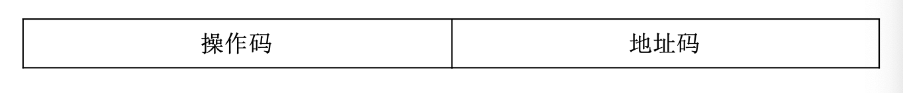

1.计算机的基本概念
计算机的概念：计算机是一种能够存储程序，能够自动连续地执行程序，对各种数字化信息进行算术运算或逻辑运算的快速工具。
- 冯诺依曼体制的核心要点
- 采用
二进制代表数据和指令，及信息（护具和指令）的数字化 - 采用
存储程序工作方式，即事先编制程序，事先存储程序，自动、连续地执行程序 - 由
存储器、运算器、控制器、输入设备、输出设备等五大件组成计算机硬件结构
冯诺依曼机的工作方式称为
控制流驱动方式：依照指令的执行序列一次读取指令，依据指令所含的控制信息调用数据，进行运算处理。 这一过程中逐步发出的控制信息成为一种控制信息流，简称控制流，一次处理的数据信息称为一种数据信息流，简称数据流 - 采用
1.2.信息的数字化表示
- 计算机中各种信息用数字代码表示
- 用数字型电信号表示数字代码
2. 计算机系统的硬、软件组成
2.1 计算机硬件系统
随着计算机硬件系统的发展，当代计算机的组成：
- 中央处理器(CPU)=运算器+控制器
随着大规模集成电路的发展，可将运算器和控制器集成到一块芯片上，合称CPU
- 存储器
可分为高速缓存、主存储器、外存储器三部分。中高速缓存常集成在CPU内部，作为CPU的一个部分，也可以在CPU之外再设置一级高速缓存。通常将CPU与主存储器合在一起称为主机，主存储器（简称主存）就是因为位于主机之内而得名，有的书中又称它为内存储器（内存）。
- 输入设备
- 输出设备

各组成部件的功能和相应特性
-
CPU(Central Processing Unit)
CPU即中央处理器，是硬件系统的核心部件，负责读取并执行指令，也就是执行程序。- 程序计数器PC(Program Counter)：存放当前指令所在存储单元的地址
PC就像一个指针，指引着程序的执行顺序。
- 算术逻辑部件ALU(Arithmetic Logic Unit)
CPU内有一个或多个ALU，按照指令要求将有关数据送入ALU，进行指定的算数或逻辑运算，然后将运算结果送到主存单元，或暂存在CPU内的寄存器内
- 控制器
控制整个系统的工作
控制器产生的微命令可分为一下两种：
- 组合逻辑控制器：组合逻辑控制器完全靠若干组合逻辑电路（即硬件）产生微命令序列，将指令代码、状态信息、时序信号等输入到这些组合逻辑电路，电路将分时产生相应的微操作命令。
- 微程序控制器：是将微命令序列以代码形式编制成微程序,以用于执行
- 程序计数器PC(Program Counter)：存放当前指令所在存储单元的地址
-
主存储器
主存储器存放着需要执行的程序及需要处理的数据，能由CPU直接读出或写入。
主存储器划分为许多单元，通常每个单元存放8位二进制数，称为1字节。每个单元都有一个唯一的编号，称为存储单元地址，简称地址。向主存储器送出某个地址编码，就能根据地址选中对应的一个单元。
。程序的最终（可执行）形态是指令序列，通常它们按照执行顺序依次存放在连续的存储单元中，通过程序计数器PC提供的指令地址，就可以逐条地读取指令。一条指令按其长度不同可存放在一个或相邻的几个单元中。有的指令需要处理的数据（又称为操作数）存放在主存的一个或相邻的几个单元中，指 令执行时，就提供地址去寻找对应单元，从中读取操作数。
可见主存储器的一项重要特性是：能按地址（单元编号）存放或读取内容，也就是允许CPU直接编址访问，通常以字节为编址单位。对主存储器来说，寻找存储单元（寻址）的依据是地址码，所存取的内容是指令或数据。
- 外存储器
外存储器用来存放那些需要联机存放，但暂不执行的程序和数据，当需要运行它们时再由外存调入主存。
由于外存储器不由CPU直接编址访问，也就是说不需要按字节地从外存储器读取或写入，因此外存储器中的内容一般都按文件的形式进行组织，一个文件常分解为若干数据块，可以包含许多字节的信息。用户按文件名进行调用，CPU找到该文件在外存中的存放位置，以数据块为单位进行读写
-
输入输出设备
-
总线
总线是指一组能为多个部件分时共享的信息传输线。
某个时刻只能有一个部件或设备向总线发送数据，如果有两个或两个以上的部件同时向总线发送数据，就会产生冲突，使数据混乱，这就是分时共享的含义。
- 地址总线
- 数据总线
- 控制总线
- 接口
用于连接系统总线与I/O设备之间的一些逻辑部件
概括的说，计算机硬件系统是由三大子系统组成：
- CPU
- 存储系统（包括高速缓存、主存和外存）
- 输入/输出系统（输入/输出设备和接口）
2.2 计算机软件组成
系统软件
系统软件是负责计算机系统的调度管理，提供程序的运行环境和开发环境，向用户提供各种服务的一类软件。
- 操作系统
操作系统负责管理和控制计算机系统硬、软件资源及运行的程序，它合理地组织计算机的工作流程，是用户与计算机之间的接口，为用户提供软件的开发环境和运行环境。
- 编译程序和解释程序
大多数情况下，用户采用高级程序设计语言编写程序，个别情况采用汇编语言编写程序。言编写出的程序叫做源程序。将源程序输入计算机后，计算机先执行一种语言处理程序，将源程序转换为机器语言代码序列，即机器语言程序，然后由计算机硬件执行这些用机器语言代码表示的指令序列，从而完成用户程序的执行过程。
- 解释方式：边解释边执行
- 编译方式：先将源程序全部翻译成目标程序（目标代码）的机器语言指令序列再执行
- 各类软件平台
将开发及运行过程中所需的各种软件集成为一个综合的软件系统，称为软件平台
应用软件
应用软件是指用户在各自应用领域中为解决各类问题而编写的程序，也就是直接面向用户需要的一类软件。
从功能角度看，系统软件是负责系统调度管理，提供开发环境和运行环境，向用户提供各种服务的一类软件；而应用软件是用户在各自应用领域中为解决各类问题所编写的程序。从配置角度看，系统软件是用户购置的系统资源之一；而应用软件是用户自身开发的，直接面向应用需要的程序。
3. 层次结构模型
3.1 从计算机系统组成角度划分层次结构

- 微体系结构
微体系结构层主要从寄存器级观察CPU的结构，分析CPU执行指令的详细过程。
- 微程序控制器：由微程序产生的控制信号控制的，相应的控制部件称为微程序控制器；
- 组合逻辑控制器：直接由硬件产生的控制信号来控制的，相应的控制部件称为组合逻辑控制器。
从硬件组成的角度进一步分析微体系结构层中寄存器、ALU、控制电路等部件的构成就可以看到，几种数字逻辑单元（与、或、非门）组合成了这一层的部件。
- 指令系统层
指令系统（又称指令集）是指一台计算机所能执行的全部指令的集合。其指令是由微体系结构层的微程序解释执行或硬件电路直接执行的。
- 操作系统层
操作系统是一个在指令系统层提供的指令和特性之上又增加了新指令（系统调用）和特性的程序。这一层有新的指令集，有不同的存储器结构，有同时运行两个或多个程序的能力，以及其他一些特性。
-
汇编语言层
-
面向问题（高级）语言层
从语言功能角度划分层次结构
计算机硬件的物理功能是执行机器语言，称为机器语言物理机，从这一级看到的是一台实际的机器。而用户看到的是能执行某种语言程序的虚拟机，即通过配置某种语言处理程序后所形成的一台计算机。

软、硬件在逻辑上的等价
有许多功能既可以直接由硬件实现，也可以在硬件支持下靠软件实现，对用户来说在功能上是等价的，我们称为软、硬件在功能上的逻辑等价。
计算机的工作过程
处理问题的步骤
- 系统分析
如果要构造一个比较复杂的应用系统，首先要进行需求分析；确定该系统应具备哪些功能并据此划分功能模块；了解需存储、处理哪些数据、数据量、调用数据时的流向等。然后根据需求分析结果选择硬件平台和软件平台。如果准备购置的平台不能完全满足需要，可能需要自己设计一些硬件部件和系统软件模块。总体设计中的这些分析工作常称为系统分析。
- 建立数学模型和设计算法
应用计算机求解、处理问题的方法，被泛称为算法。
- 编写应用程序
在建立数学模型与设计算法之后，关键的技术问题已基本解决，这时就可以选择合适的程序设计语言和开发工具，着手编写应用程序。
-
编译为目标代码
-
由硬件执行目标程序
通常先将目标程序存储在磁盘中，用户需执行时给出文件名，操作系统按文件名调出目标程序并送入主存，然后将它在主存中的首址送入程序计数器PC之中，从该地址开始依序执行目标程序。
指令执行过程
- 取指令与指令分析
CPU中有一个程序计数器PC，它存放着当前指令（取指时）所在主存单元的地址码。因此每当读取指令时，就先将PC的内容送入主存储器的地址寄存器中，据此访问主存单元，从中读出指令，送入指令寄存器IR。一条指令代码可能要分别存放在几个地址连续的主存单元中，每读出一个单元的指令代码，PC内容就相应地加1，如果这条指令占n 个主存单元，那么在该指令代码都读取后，PC内容就加了n ，这时PC指示的就是下一条指令在主存的位置。
当指令代码读入到IR之后，相应的逻辑电路（可称为指令译码器）就自动地分析
-
读取操作数
- 源操作数：从主存中读出的信息具有复制性质，不影响原来的内容。这种操作数称为源操作数。
- 目的操作数：既是一个操作数的来源地，又是存放运算结果的目的地，所以它提供的操作数叫做目的操作数
-
运算
对操作数进行指定的操作
- 后继指令地址
在读取指令时PC的内容已自动修改，本例不需要转移指令地址，所以PC修改后的内容就是后继指令地址，即下一条待执行指令所在存储单元的地址。
数字计算机的特点与性能指标
特点
- 能在程序控制下自动连续的工作：储存程序工作方式
- 运算速度快：采用高速电子线路组成硬件
- 运算精度高：采用数字代码表示信息
- 具有很强的信息存储能力：二进制易保存
- 通用性强，应用领域广：基于信息表示的数字化
性能指标
- 基本字长：指参与一次运算的二进制数的位数。
- 数据通路宽度：数据总线一次所能并行传送的二进制数的位数
- 运算速度
- CPU时钟频率与主频
计算机的操作需要分步执行，一个时钟周期完成一步操作
计算机中有一个振荡器，它的输出经整形后形成全机最基本的脉冲序列，其频率称为主频。主频脉冲经分频后形成时钟脉冲序列，一个时钟脉冲前沿到下一个时钟脉冲前沿就形成一个时钟周期。所以主频是时钟频率的整数倍。
- 每秒平均执行指令的条数(/MIPS)
- 分别标明几种典型四则运算所需的时间
- CPU时钟频率与主频
计算机的操作需要分步执行，一个时钟周期完成一步操作
- 主存储器容量
两种表示方法
- 字节数
- 单元数（字数）X 位数
- 外存容量
- 配置的外围设备机器性能
- 系统软件配置
计算机的发展与应用
发展历程
提高性能的若干技术
计算机应用举例
第二章、计算机中的信息表示
[toc]
计算机内部所处理的信息必须是数字化信息，可分为两大类：
- 数据：
- 数值型数据：数值型数据有确定的值并在数轴上有对应的点
- 非数值型数据：非数值型数据没有确定的值，如字符、图像等。
- 指令：计算机产生各种控制命令的基本依据。
数值型数据的表示
带符号数的表示
真值与机器数
真值：用‘+/-’号加上绝对值的表示方法
机器数：数字实际存储到机器里的形式，正负号需要被“数字化”
机器数有原码、补码、反码和移码四种表示方法
BCD码
用四位二进制来表示一位十进制数，可表示0-16，挑出9位来表示十进制数。
- 8421码
两位8421码相加若结果大于9，则再加一个6，进行四位二进制数的进位。
- 余3码：8421码+$(0011)_2$
原码
用最高位表示符号，符号位为0表示该数为正，为1表示该数为负；有效数值部分则用二进制绝对值表示。
小数在个位表示符号位
若采用原码作乘除运算，可取其绝对值（即尾数）直接运算，并按同号相乘除取正、异号相乘除取负的原则，单独处理符号位，因此较方便
补码
- 引入
56-24=32，56+76=132=32，该加法中，100超出了表示范围，所以这两的运算结果相同，-24的补码（相对模100）是76。在有模运算中，一个负数可以用其补码代替，得到的是相同的结果
可以把相减变成相加
- 定义
计算机中数的表示及运算受字长限制，其运算都是有模运算。模在机器中是表示不出来的，若运算结果超出能表示的数值范围，则会自动舍去溢出量，只保留小于模的部分。

反码
正数不变，负数符号位不变，其余位取反
移码
补码的基础上将符号位取反。只能用于表示整数
移码相当于把真值映射到正数域(+$2^n$)。若将移码视作无符号数，则移码的大小就反映了真值的大小，这将便于两个浮点数的阶码比较。
比较与总结
原码和补码的关系：将负数用补码表示，实际上是实现了一种从[-128,127]到[0,255]的映射
为什么10000000表示-128? $$(-128)=(-1)=(-127)=[1000 0001]_原+[11111111]_原=[11111111]_补+[10000001]_补=[10000000]_补$$
定点数与浮点数
定点数
小数点固定的机器数称为定点数，计算机中只采用纯小数或纯整数形式
小数点只是一个约定，机器硬件中并不存在
- 定点整数
定点整数的小数点位置固定在最低位之后
- 定点小数
定点小数的小数点位置固定在符号位（最高位）之后
对于绝对值小于定点小数分辨率$2^{-n}$的数，当机器数0处理
溢出
参加运算的数以及运算的结果必须在该定点数所能表示的数值范围之内。
- 负溢出：机器数小于定点数的最小值（即绝对值最大负数）
- 正溢出：当超出最大值时，称为“正溢出”；
当机器中发生溢出时，将迫使机器转入溢出处理程序或暂停，并将CPU中的状态寄存器的溢出标志位置位。
定点数的小数点位置约定在固定位置上，因此不需设置专门的硬设备来表示它，显然小数点在机器中并不实际存在。对计算机来说，处理定点整数与处理定点小数在硬件上并无区别，至于选择哪一种定点数格式是在程序中约定的。
比较

浮点数
计算机中也引入了类似于 科学计数法 的方法来表示实数，称为浮点数表示法，即小数点的位置可以根据需要而浮动。
浮点数的代码由两部分组成：阶码E和尾数M。浮点数的真值表示为： $$N= \pm R^E·M$$
- R是阶码的底，机器中一般规定为2，8或16（进制），与尾数的基数（进制）相同
- E是阶码，即指数，为带符号整数，常用移码或补码表示
- $e_s$是阶符，表示指数的符号
- M是尾数，通常是纯小数，常用原码或补码表示
- $M_s$是尾数的符号位，安排在最高位，也是整个浮点数的符号位

非IEEE浮点数格式化形式：规格化尾数应满足1/2<=|M|<1
当阶码小于机器能表示的最小阶码（即 该浮点数的值小于最小绝对值）时，称为下溢，此时一般当作机器零 处理，机器可继续运行。当阶码大于机器所能表示的最大阶码时，称 为上溢，即溢出，这时机器必须转入溢出出错中断处理。

IEEE标准： 尾数用原码表示，隐含最高位1，实际尾数为尾数+1(即1.M) 阶码用移码表示，实际阶码需要减去偏移量$2^{|E|-1}-1$
其中|E|为阶码的长度
字符的表示
ASCII码
一个ASCII码占一个字节，只使用底七位，最高位置0，可表示128个字符
Unicode编码
Unicode最基本的思路是将每个字符和符号赋予一个永久、唯一的16位值，即码点
汉字编码简介
- 输入码
拼音码，字形码等，所产生的输入码需要借助输入码与内部码的对照表（称为输入字典）转换成便于加工处理的内码。
- 汉子交换码
纳入整理的汉字排成一个94×94的行列矩阵，矩阵的行称为区，列称为位。用双字节编码表示。前一个字节表示区，后一个字节表示位
- 内部码
汉字内部码（简称内码）是计算机内部供存储、处理、传输用的代码。
todo:P107
指令信息的表示
一台计算机能够直接识别并执行的程序只能是机器语言程序。
因此，任何问题无论使用哪一种计算机语言（汇编语言或某种高级语言）来编程实现，都必须通过翻译程序转换成对应的机器语言程序后才能执行。
机器语言程序是由机器指令序列组成的，它们是产生各种控制信息的基础。
一条机器指令是一组有意义的二进制代码，它指示机器硬件应完成哪种基本操作。
一台计算机的所有指令的集合构成该机的指令系统。
指令系统既是为软件设计者提供的最低层次的程序设计语言，也是硬件设计者的最基本的设计依据。因此，指令系统是软件和硬件的接口
指令格式
- 指令中的基本信息
计算机是通过执行指令来处理各种数据的。为了指出所执行的操作、操作数的来源和操作结果的去向，以及下一条指令从哪里取
一条指令一般应包含以下信息：
- 操作码：表示该指令所要完成的操作
- 操作数的地址：给出操作数存放处的地址
如主存单元地址或寄存器地址。CPU通过该地址可以获得所需的操作数。
- 操作结果的地址：对操作数进行处理所产生的结果存放在该地址中，以便再次使用。
- 下一条指令地址
由于存储在主存储器中的程序（机器指令序列）是按指令执行顺序连续存放的，并且在大多数情况下程序是顺序执行的，因此可以设计一个程序计数器PC专门存放指令地址，每取出一条指令后，PC自动增值指出下一条指令地址，这样就不需在指令中直接给出下一条指令的地址。当需要改变程序执行顺序时，可由转移类指令实现。
从上述分析可知，一条指令实际上包括两种信息，即操作码和地址码，因此指令的基本格式为：

- 操作码(Operation Code): 具体说明该指令操作的性质及功能。
- 地址码(Address Code): 描述该指令的操作对象，由它给出操作地址或直接给出操作数，并给出操作结果的存放地址。
- 地址码结构
三地址码
OP A1 A2 A3
-
功能：(A1)OP(A2)->A3
-
说明：
- OP表示操作码
- A1: 表示操作数1的地址
- A2: 表示操作数2的地址
- A3: 结果存放地址
A1 、A2 和A3 可以是主存单元地址或寄存器地址。
二地址码
OP A1 A2
- 功能：(A1)OP(A2)->A1
- 说明：
- A2: 提供的操作数，在运算后仍保存在原处，称它为源操作数，A2 称为源地址
- A1: 提供的操作数，在运算后不再保留，该地址改为存放运算结果
因为A1 最终是存放结果的目的地，所以一开始由A1 提供的操作数称为目的操作数
一地址码
只有目的操作数的单操作数指令
OP A
- 功能：(OP)A->A
- 说明：指令中只给出一个目的地址A，A既是操作数的地址，又是操作结果的存放地址。
隐含约定目的地址的双操作数指令
OP A
- 功能：(AC)OP(A)->AC
- 说明：
- 源操作数按指令给出的源地址A读取，
- 另一个操作数（目的操作数）隐含在CPU的累加器AC中，运算结果也将存放在AC中。
在某些微机中，双操作数指令也可采用一地址指令格式。
零地址码
不需要操作数
OP
- 说明：例如块操作指令、停机指令
所需的操作数是隐含的
OP
- 说明：如计算机中对堆栈操作的运算指令，所需的操作数事先约定在堆栈中，由堆栈指针SP隐含指出，操作结果仍送回堆栈中。
指令和操作数同样是以二进制代码形式存储的，从表面上看二者并无区别。但是，指令地址是由程序计数器PC指定的。而操作数地址则是由指令中的地址码规定的。因此二者绝不可能混淆。
- 操作码结构
指令中的操作码用来指示机器应执行什么性质的操作，每一条指令都有一个含义确定的操作码，不同指令的操作码用不同的二进制编码表示。
- 固定长度地址码
操作码的长度固定，且集中放在指令字的一个字段中，指令的其余部分全部用于地址码。
操作码固定长度有利于简化硬件设计和缩短指令译码时间。
- 可变长度地址码
背景：如果指令长度一定，则地址码与操作码的长度是相互制约的 解决办法：可采用扩展操作码的办法，即操作码和地址码位数不固定，操作码位数允许有几种不同的选择，对地址数少的指令允许操作码长些，对地址数多的指令则操作码就短些。
- 复合型地址码
将操作码分为几个部分，它们的组合使操作含义更丰富。
- 指令长度
- 变字长地址
不同的指令可以有不同的字长。
但因为主存通常按字节编址，所以指令字长多为字节的整数倍
功能实现：将操作码放在指令字的第一字节，当CPU读出操作码后可立即判定，这是一条单操作数指令，还是一条双操作数指令，或者是零地址指令，从而知道后面还应读取几字节的指令代码。
- 固定字长地址
指令长度固定，方便机器预取后续指令，有利于指令流水线执行。
现在RISC的微处理器通常采用固定字长指令
常用寻址方式
一条指令包括操作码和地址码，指令的功能就是根据操作码对地，址码提供的操作数完成某种操作。指令中以什么方式提供操作数或操作数地址，称为寻址方式。
指令所需要的操作数可能存放在以下几种地方：
- 就包含在该指令之中。
- 存放在CPU的某个寄存器中。
- 存放在主存单元中。
- 只需对某个操作数进行处理
- 需要对一个连续的数组或表进行处理。
- 存放在堆栈区中。
- 存放在某个I/O接口的寄存器中。
两种地址： 形式地址：指令中的地址码不能直接用来访问主存 有效地址：对形式地址进行一定的计算而得到的存放操作数的主存单元地址
寻址方式的类型
- 立即寻址类: 在读取指令时也立即读出操作数。
通常用于为程序提供常数或某种初始值，提供的是不可变的数据
- 直接寻址类: 直接给出主存的有效地址或寄存器号，以读取操作数。
- 堆栈寻址: 操作数存放在堆栈中，指令隐含约定由堆栈指针SP寄存器提供堆栈栈顶单元地址，进行读出或写入。
有效地址是指令的一部分，不能随程序需要动态改变，因而该指令只能访问某个固定的主存单元。
- 间接寻址类: 先从某寄存器或主存单元中读取有效地址，再按这一地址访问主存以读取操作数。
即指向指针的指针 可将间址单元当成一个读取操作数的地址指针，它指示操作数在主存中的位置，只要修改指针（即间址单元的内容），则同一条指令就可以用来在不同时间访问不同的存储单元。
- 变址类: 指令给出的是形式地址，经过某种计算才获得有效地址，据此访问主存，读取操作数。
- 变址寻址: 指令的地址部分给出一个形式地址（位移量），并指定一个寄存器作为变址寄存器(Rx)；变址寄存器内容（称为变址量）与形式地址相加，得到操作数有效地址；
- 相对寻址: 以当前指令位置为基准，相对它进行位移（往前或往后）定位
用程序计数器PC的内容作为基准地址，指令中给出的形式地址作为位移量（可正可负），二者相加后形成操作数的有效地址。
指令类型

一般所有的计算机都提供表2-4中的前三类指令。指令系统对后四类指令的支持取决于具体机器
- 算数和逻辑运算类指令
- 运算指令: 设置加、减、比较、移位等最基本的定点。
性能稍强一点的机器，还设置定点乘、除运算指令。
- 逻辑运算: 逻辑与、逻辑或、逻辑非（求反）和异或4种。
有些机器设置有专门的位操作指令，如位测试、位清除、位设置等；而有些机器则通过逻辑运算指令实现位操作。
- 移位操作: 算术移位、逻辑移位和循环移位
对于未设置某种运算指令的机器，如果要实现这种运算，则可以通过程序方法来实现。也可以增设扩展运算部件。
- 数据传送类指令
这类指令将数据从一个地方传送到另一个地方，可用来实现寄存器与寄存器、寄存器与主存单元，以及主存单元与主存单元之间的数据传送
而且纯数据传送具有“复制”性质，即数据从源地址传送到目的地址时，源地址中的数据保持不变。
输入/输出（I/O）类指令完成主机与外围设备之间的信息传送有三种设置方式
- 专用的I/O指令
OP R A
OP是操作码，表示它是I/O指令；
R是CPU中寄存器的地址，指定与外设交换数据的寄存器；
A是I/O端口的地址，其长度一般为8～16位，可以表示256～64 K个地址。
- 用通用的数据传送指令实现I/O操作
在I/O接口的端口与主存单元统一编址的机器中，因为将I/O端口与存储器单元同等对待，所以任何访问主存单元的指令均可访问I/O接口中的端口，这样就可以用传送类指令实现主机与I/O接口之间的信息传送
- 通过I/O处理执行I/O操作
- 程序控制类指令
这类指令可以控制程序执行的顺序和选择程序的执行方向
-
转移指令
- 无条件转移指令: 改变指令的常规执行顺序，不受任何条件约束，直接把程序转移到该指令指向的任何地址（指令地址）开始执行。
这种操作使程序计数器PC的内容改变为转移地址。
- 条件转移指令; 需先测试某些条件，仅当条件满足时，才执行转移，否则只相当于一条空操作指令，不改变程序执行顺序。
决定转移的条件一般是指上次运算结果的某些待征。
在CPU的状态寄存器中，有一组用来保存最近执行的算术逻辑运算指令、移位指令等的结果标志，它们主要包括- 进位标志C
- 结果为零标志Z
- 结果为负标志N
- 溢出标志V
- 奇偶标志P。
-
循环控制指令: 有了条件转移指令就可以实现循环程序设计。但有的机器为了提高指令系统的有效性，还专门设置了循环控制指令，它包括对循环控制变量的操作和脱离循环条件的控制，是一种具有复合功能的指令。
-
子程序调用和返回指令
- 执行子程序调用指令时，首先将下一条指令地址（即断点）压入堆栈保存，然后转入所调用的子程序执行。
- 子程序执行完毕，由返回指令把调用子程序时压入的返回地址从堆栈中弹出，以返回调用程序。
-
程序自中断指令
- 按中断方式将处理机断点与现场保存在堆栈中（这点与一般的转子程序不同），然后转向对应的中断处理子程序入口开始执行
- 执行完毕后，通过中断返回指令返回到原程序断点继续执行。
由于自中断指令是由软件驱动的，所以又称为软中断。
- 系统类指令（特权指令）
特权指令是指具有特殊权限的指令，它们只能用于操作系统或其他系统软件，一般不直接提供给用户使用。
- 通常在单用户、单任务的计算机系统中不需要设置特权指令
- 在多用户、多任务计算机系统中，则必须设置特权指令，它主要用于系统资源的分配和管理。如检测用户的访问权限、修改虚拟存储器管理的段表、页表等。
在有些多用户计算机系统中，为了统一管理各种外设，输入/输出指令也作为特权指令使用，故用户不能直接访问它们。需输入/输出时，可通过系统调用来实现。
Pentium2指令格式
SPAERC指令格式
第三章 微体系结构层--CPU组成
[toc]
从计算机系统的功能组成角度看，中央处理器CPU（Central Process Unit）是计算机系统的核心部件，它主要由寄存器、算术逻 辑部件ALU、控制器及互连它们的机构组成。
CPU执行一条指令是由控制器产生的一组微命令（即控制信号：控制门电路的开关）序列实现的。按微命令的形成方式不同，控制器有两种组成方式
- 组合逻辑控制方式
- 微程序控制方式
在微体系结构层，我们看到的是一些寄存器和算术逻辑部件ALU 相连构成的数据通路，即中央处理器CPU的数据通路。
数据通路的基本功能是传送和运算数据，如选择一个或两个寄存器的内容作为ALU的操 作数，将它们进行运算（如相加），然后将结果存回某个寄存器中。
在一些机器上，这些功能
- 是由微程序产生的控制信号控制的，相应的控制部件称为微程序控制器；
- 而有些机器是直接由硬件产生的控制信号来控制的，相应的控制部件称为组合逻辑控制器。
1. CPU的组成和功能
中央处理器CPU的主要功能是
- 从主存储器中取出指令
- 解释指令和执行指令
即按指令控制计算机各部件操作，并对数据进行处理。
1.1 CPU的组成

- 控制器：产生一系列控制信号，1️⃣控制计算机中各部件完成操作
- 算数逻辑单元ALU：实现所指定的各种算数运算和逻辑运算
- 各种寄存器：存放指令、指令地址、操作数及运算结果
- CPU内部总线：连接CPU内部各部件，为信息传送提供通路
1.1.1 ALU部件与寄存器
- ALU部件
ALU的功能是实现数据的算术与逻辑运算。常用图3-2中所示的框图表示ALU。可以看出，
- ALU的输入有两个端口
- 分别接收参加运算的两个操作数
- 通常它们来自CPU的通用寄存器或ALU总线。
- ALU的输出取决于对其功能的控制
- 当控制功能选择加、减、与、或等运算功能之一时
- 其输出结果将为对应的和、差、与值、或 值等。
- 寄存器
CPU中的寄存器包括
-
存放控制信息的寄存器
-
指令寄存器IR(Instruction Register)
- 存放当前正在执行的一条指令。
- 执行一条指令时，通常是先将其从主存储器(Memory)读出到主存数据寄存器MDR（Memory Data Register）中，然后再送往指令寄存器IR中。
-
程序计数器PC(Program Counter)
- 存放当前或下一条指令在主存中的地址
因此又称为指令计数器或指令指针IP（Instruction Pointer）。
-
状态字寄存器
- 存放当前程序的运行状态和工作方式，其内容称为程序状态字PSW（Program State Word），PSW是参与控制程序执行的重要依据。
- PSW中一部分内容是记录上一条指令执行后的结果标志
- 进位标志C、溢出标志V、结果为零标志Z、结果正负标志N、奇偶标志P等。
每当一条指令执行完，CPU将根据运行结果自动修改这些标志。
- PSW中另一部分内容由编程设定（也称为控制标志）
- 跟踪标志T，用以编程设定断点；中断允许标志I，指示CPU是否允许响应 外部中断请求。
- 有的机器还设有工作方式字段，若设定为用户方式， 则禁止用户使用某些特权指令。
-
-
及存放所处理数据的寄存器
-
通用寄存器
- 每个寄存器都可以提供多种用途
- 每个通用寄存器都有唯一的编号，称为寄存器地址。
- 通用寄存器可用D触发器构成。
-
暂存器
- 暂存从主存储器读出的数据
这些数据不能存放在通用寄存器中，否则会破坏其原有内容。
- 暂存器还可用于暂存来自通用寄存器组的数据。
- 暂存器没有寄存器号，因此不能直接编程访问它们。
-
1.1.2 总线
总线是一组能为多个部件分时共享的公共信息传送线路，它分时接收各部件送来的信息，并发送信息到有关部件。
会出现多个部件争用总线
CPU内部总线用来连接CPU内的各寄存器与ALU，主要用于传送数据信息。
系统总线用来连接CPU、主存储器与I/O接口，它通常包括三组：
- 数据总线: 主要传送各大部件间的数据信息，如指令代码、操作数、命令字或状态字等。
- 地址总线: 传送主存单元地址码或I/O端口地址。
- 控制总线: 传送控制、状态信息，其中有CPU发出的控制信号，也有送入CPU的状态信号。如CPU输出的对主存的读/写控制信号、外设输入到CPU的中断请求信号。
1.1.3 CPU内部数据通路
- 单总线数据通路结构

- CPU数据通路结构只采用一组内总线，它是双向总线。
- 通用寄存器组、其他寄存器和ALU均连在这组内总线上。
- CPU外部的系统总线通过主存数据寄存器MDR和主存地址寄存器MAR（Memory Address Register）与CPU内总线相连。
- CPU内各寄存器间的数 据传送必须通过内总线进行，ALU通过内总线得到操作数，其运算结果 也经内总线输出。
- 这种结构要求在ALU输入端设置两个暂存器。主要用于暂存提供给ALU的两个操作数。
- 暂存器还可作为通用寄存器之间传送的转存部件。
- 多组总线结构
- 使几个数据传送操作能够同时进行，即实现部分并行操作。
- 每组总线连接几个部件的输入端，但只连接一个输出端
通用寄存器之间的数据传送必须经ALU才能完成。
1.2 指令执行过程
- 指令的分段执行过程
任何一条指令的执行都要经过读取指令、分析指令和执行指令三 个阶段。读取与分析指令的操作，对所有指令几乎都一样，而每条指 令的执行阶段的具体操作则有较大差别。
如有的指令需要从存储器中 取操作数，再进行运算，运算结果还要写回存储器，因此执行阶段还 可细分。
-
取指令:
- 根据指令计数器PC提供的地址从主存储器中读取当前指令，送到主存数据缓冲器MDR中，然后再送往CPU内的指令寄存器IR中。
- 同时改变指令计数器PC的内容，使之指向下一条指令地址或紧跟当前指令的立即数或地址码。
-
分析指令
- 如果采用组合逻辑控制器，则通过译码电路译出IR中指令各字段表示什么操作，并在时序系统的配合下产生该指令对应的微操作命令序列。
- 若采用微程序控制器，则可根据指令的操作码与标志位转向控制存储器取出对应的微程序，由微指令提供微操作命令序列。
-
执行过程
-
取操作数
- 如果当前指令需要从主存取操作数，就需安排时间再次访问存储器。
- 如果是间址方式或是取双操作数，则访存次数更多。
- 若是变址方式，在取数之前还需安排时间进行变址计算。
-
执行操作
- 如果当前指令需要运算，则需考虑形成稳定运算结果的时间，为此安排专门的节拍。
对乘除、浮点运算则需占用更多的节拍。
- 若运算结果需送回主存单元，则应安排时间以完成对主存的写操作。
-
形成下一条指令地址
- 对于顺序执行的指令，下一条指令地址在取指令、取立即数、取地址码时，就已形成在PC中；
- 如果是转移类指令，则将形成的转移地址送到PC中。以后再取下一条指令、分析、 执行……，如此循环直至程序执行完毕或外来干预为止。
-
CPU还应该对运行过程中出现的某些异常情况或输入/输出请求进行如下处理：
- 当机器出现某些异常情况
如算术运算的溢出和数据传送的奇偶错等
- 或者某些输入/输出请求
如磁盘上的批量数据需送存储器或程序员从键盘送入命令等
此时由相应的部件或设备发出“中断请求信号”或“DMA请求信号”。 若CPU收到中断请求信号
- 在执行完当前指令后，响应该中断请求，暂停当前执行的程序，转去执行中断处理程序。
- 当处理完毕后，再返回原程序断点继续执行下去。
若CPU收到DMA请求信号
- 在完成当前机器周期操作后，响应该DMA请求，暂停工作，让出总线给DMA控制器
- 由它控制完成输入/输出设备与存储器之间的数据传送操作后，CPU从暂停的机器周期开始继续执行指令。
注意，DMA操作不会改变CPU中任一寄存器（除DMA专用部件外）的状态，因此CPU可以从暂停处快速恢复程序的正确执行。
- 指令之间的衔接过程
- 串行的顺序安排方式: 在一条指令执行完毕后才开始取下一条指令
- 并行的重叠处理方式: 在对当前指令执行运算操作时提前从主存取出下一条指令，而不必等当前 指令全部执行完。
但如果程序需要转移，预取下一条指令就要失败。 不过由于大多数情况下程序流程是顺序执行，下一条指令地址并不依赖本次执行结果，所以预取指令还是能有效地提高执行速度。
1.3 时序控制方式
1.3.1 同步控制方式
指各项操作由统一的时序信号进行同步控制。这就意味着各个微操作必须在规定时间内完成，到达规定时间就自动执行后继的微操作。
基本特征: 将操作时间分为若干长度相同的时钟周期 （也称为节拍），要求在一个或几个时钟周期内完成各个微操作。机器的时钟频率（主频）的选择主要取决于CPU内部的操作。
通常时钟周期应能完成CPU内部花费时间最长的微操作。显然，对于花费时间少的微操作，就会有时间上的浪费，这是同步控制方式的一个缺点。
1.3.2 同步时序控制的多级时序系统
- 多级时序的概念
在同步控制方式中，通常将时序信号划分为几级（其中包括指令 周期），称为多级时序。
指令周期是指从取指令、分析指令到执行完该指令所需的时间。
在时序系统中，因其执行时间的长短可能不同，通常不为指令周期设置时间标志信号，因而也不将其作为时序的一级。
在组合逻辑控制器中: 依靠不同的时间标志使CPU分步执行指令，其时序信号常划分为三级：
- 机器周期
- 节拍
- 时钟脉冲 而在微程序控制器中， 一条指令对应一段微程序（微指令序列），指令的分 步执行是由执行不同的微指令来实现的，每条微指令的执行时间为一个节拍，故其时序信号划分为两级：
- 节拍
- 时钟脉冲。
机器周期：
组合逻辑控制器中，通常将指令周期划分为几个不同的阶段，每个阶段所需的时间称为机器周期，又称为CPU工作周期或基本周期。
例如，取指令周期、存储器读周期、存储器写周期等。在不同的机器周期中完成不同的操作。
在时序系统中需设置一组周期状态触发器，以标志不同的机器周期，任一时刻只允许有其中的一个触发器为1，表明CPU当前处在哪个机器周期。不同的机器周期的长短可以不同。
节拍（时钟周期）
一个机器周期的操作一般需分几步完成。为此，将一个机器周期划分为若干相等的时间段，每个时间段内完成一步基本操作。这个时间段用一个电平信号宽度对应，称为节拍或时钟周期。
- 节拍长度的确定，一般取决于CPU内部的操作需要。
- 在时序系统中设置有节拍发生器，用以产生节拍信号。
时钟脉冲信号CLK
节拍的宽度确定后，时钟脉冲信号的频率也就随之确定了。
在时序系统中，是将由时钟发生器产生时钟脉冲信号作为时序系统的基本定时信号。
此外，在节拍信号的配合下
- 时钟脉冲CLK信号前沿将运算结果打入寄存器
- 其后沿实现周期切换等功能。
- 多级时序信号之间的关系

- 时序系统的组成
- 主振: 就是一个晶体振荡器，当机器一上电就产生频率稳定的主振信号
- 主振信号由时钟发生器经过整形分频后得到时钟脉冲信号。
- 启停控制线路控制时钟脉冲CLK的发与不发。
- 节拍发生器按先后顺序，循环地发出若干节拍信号，它通常用计数译码电路构成。
1.4 指令流水线
一条指令的执行过程也是分成几个步骤实现的。作为一个简化的方法，考虑将指令处理分成两个阶段：取指令和执行指令。在一条指令执行期间，有主存空闲的时间，这个时间能用于取下一条指令，从而使取下一条指令与当前指令的执行并行工作。
重叠执行存在的问题
- 执行时间一般要长于取时间。
取指阶段可能必须等待一定的时间才能更新它的缓冲器。
- 条件转移指令使得待取的下一条指令的地址是未知的。
简单解决：当一条件转移指令通过取指阶段到执行阶段时，新的取指阶段取存储器中此转移指令之后的指令。若转移发生，则要作废已取的指令并再取新的指令。
为获得进一步的加速，流水线可以分成更多的阶段。
- 取指令(FI): 读取下一个预期的指令到寄存器
- 译码指令(DI): 分析操作码和操作数寻址方式
- 计算操作数地址(CO): 计算每个源操作数的有效渎职
- 取操作数(FO): 根据操作数地址从存储器取操作数，寄存器中的数不用取
- 执行指令(EI): 完成操作码指定的操作。若有指定的目标操作数为位置，则将结果写入此位置
- 写操作数(WO): 将结果存入存储器
以上分解，使各个阶段几乎用相等的时间。

此过程不适用与所有计算机
影响流水线性能的主要因素：
-
若各个阶段不全是相等的时间，会在各个流水阶段涉及到某种等待。
-
流水线中的相关问题
- 数据相关：第二条指令需要第一条指令的结果
- 发生数据相关时，第2条指令的操作数直接从数据处理部件得到，而不是存入后再读取。
- 数据流分析技术：分析哪一条指令依赖于其他的结果或数据，依此来优化指令调度。
PentiumⅡ就采用该技术，根据分析结果重排指令，使指令以优化的顺序执行，与原始程序的顺序无关。
- ...
- 数据相关：第二条指令需要第一条指令的结果
-
遇到条件转移指令时，确定转移与否的条件码往往由条件转移指令本身或由它前一条指令形成，只有当它流出流水线时，才能建立转移条件并决定下一条指令地址。
- 猜测法：机器先选定转移分支中的一个，按它继续取指并处理
- 假如条件码生成后，说明猜测是正确的，那么流水线可继续进行下去，时间得到充分利用；
- 假如猜错了，那么要返回分支点，并要保证在分支点后已进行的工作不能破坏原有现场，否则将产生错误。
更复杂的例子是，不只预测下面一个分支，还要提前预测多条分支，如PentiumⅡ就可以进行多重跳转分支预测。
- 猜测法：机器先选定转移分支中的一个，按它继续取指并处理
-
I/O设备有中断请求或机器有故障，要求中止当前程序的执行而转入中断处理。
2. 算数逻辑单元ALU和运算方法
2.1 移位
-
逻辑移位：位置变化，空出位补0
适用于无数值大小的二进制代码
-
循环移位
- 最高位左移入最低位
- 最低位右移入最高位
形成闭合环路
-
算数移位：带符号数的移位，移位后数的符号不变而数值发生变化。
左移实现乘2，右移实现除2，各个数字所对应位置的权发生了变化
- 原码
- 左移：符号位不动，其余各位依次左移，末尾补0
- 右移：符号位不动，其他位依次右移，最高有效位补0
- 补码
- 左移：各位依次左移，末尾补0
若符号位变化，则发生溢出
- 右移：符号位不变，其余位右移，最高有效位复制符号位
- 左移：各位依次左移，末尾补0
- 原码

2.2 定点数加减运算
2.2.1 原码加减法
和操作码和符号都有关
- +A+(-B) -> +A-(+B), 结果符号与绝对值大的符号相同
- +A-(-B) -> +A+(+B), 结果与被减数符号相同␍
2.2.2 补码加减法
$$[X+Y]_补=[X]_补+[Y]_补$$ $$[X-Y]_补=[X+(-Y)]补=[X]_补+[-Y]_补$$
已知$[Y]_补$求$[-Y]_补$ 将$[Y]_补$的每一位（包括符号位）取反，最低位+1
补码运算规则
- 参与运算的操作数用补码表示
- 符号位页参与运算，所得结果也是补码表示
2.2.3 溢出
如果两个操作数都是同符号数
- 相加 可能溢出
- 相减 不会溢出
- 采用单符号判断法
- 正+正=负 溢出（正溢）
- 负+负=正 溢出（负溢）
- 双符号位(变形补码)判断法
最高位表示正确的符号，存储时一位，计算时两位
变形补码表示的数：
- 不溢出
- 00：结果为正数
- 11：结果为负数
- 溢出
- 01：结果正溢
- 10：结果负溢
- 查看进位
2.3 定点数乘除运算
2.3.1 乘法
- 无符号整数一位乘法
计算机中，n位乘法 转换为 n次“累加与移位”
每一步只求一位乘数所对应的新部分积，并与原部分积作一次累加，然后右移一位。
流程图
- 3个寄存器A、B、C
- B：被乘数
- C：乘数
- A：初值为0，然后存放部分积，最后存放乘积高位,C存乘积低位
- 乘数每乘一位该位代码就不再使用，A和C寄存器联合右移，将$C_0$替换
- 存放逐次增加的部分积，并且使每次乘数位始终在C的最低位$C_0$。
- 乘法完成时，A与C存放的是最后乘积。
硬件原理图
- 初始化：被乘数送入B、乘数送入C，A和Ca置0（进位触发器$C_a$保存每次累加的进位）
- 由乘数位C0产生“加B/不加”（加0）信号，用以控制被乘数B是否与上次部分积相加产生本次部分积
- 然后$C_a$、A、C一起右移一位；
- 重复n个节拍的操作后所得到的乘积存放在A和C中。
- 终止条件：乘数中的每一位都被替换(寄存器C)
举例

- 有符号整数一位乘法
- 有符号 原码 一位乘法
- 符号位单独处理，做异或操作
- 乘积为|X|·|Y|
- 有符号 补码 一位乘法
- $[X·Y]_补=[X]_补*Y$
2.3.2 除法
关键在于判断够减与否的问题
- 用逻辑线路进行比较判别。硬件代价大。
- 直接做减法试探。操作不规则，控制时序复杂。
- 判断结果符号
- 为0（即正）表明够减，上商1；
- 为1（即负）表明不够减，上商0并加上之前减去的除数（即恢复余数）
- 然后余数左移一位再做下一步。这就是恢复余数法。
- 判断结果符号
加减交替法(不恢复余数法)
- 余数为正，商“1”，余数左移一位，余数减除数
- 余数为负，商“0”，余数左移一位，余数加除数
流程图
- n位除数存放在B中，2n位被除数存放在A和C中。
- 除法完成后商放在C中，余数放在A中。
- 终止条件：被除数的低n位中的值全被商替换后(寄存器C)

在重复n-1次操作后，如果A中的余数为负，需要恢复余数做A+B。最后的寄存器A中应获得正确的正余数。
举例
2.4 浮点数运算
2.4.1 加减法
运算规则
-
对阶：向大阶看齐（为确保精度）
- 求两数阶码之差E
- 阶码小的数尾数右移E位，结果阶码为大阶数阶码值
- 原码右移，最高位补0
- 补码右移，复制最高位
-
尾数相加减
-
结果规格化
- 原码：最高有效位为1
- 补码最高位与符号位相反（-0.5除外）
若结果位双符号补码
- 规格化：00.1XXXX或11.0XXXX
- 左规：00.0XXXX或11.1XXXX(11.10..0除外)
- 左移，同时阶码减小，直至规格化
- 右规：01.XXXX或10.XXXX
- 右移，复制符号位，同时阶码增大，直至规格化
-
舍入
- 下舍上入法：0舍去，1则在新的尾数末尾加1
- 恒舍/恒置1，误差大
-
判溢：根据阶码判断
- 左规后，阶码减小 -> 判断是否下溢 -> "0"处理
- 右规后，阶码增大 -> 判断是否上溢 -> 中断处理
2.4.2 乘除法
乘法
- 阶码相加并判溢
- 补码相加：$[E_x+E_y]_补=[E_x]_补+[E_y]_补$
- 移码相加：$[E_x\pm E_y]_移 = (2^n+([E_x]_补\pm [E_y]_移)) mod 2^{n+1}$
- 尾数相乘
- 规格化处理
- 顶多左规一次（原来两数已是规格化），阶码减小，可能下溢
- 判溢
2.5 ALU
ALU主要完成对二进制代码的定点算术运算和逻辑运算
- 算数：定点加减
- 逻辑：逻辑与、或、异或、非
组合逻辑电路—多功能函数发生器；核心—加法器
硬件实现
- 如何构成一个二进制加法单元，即全加器
使用半加器构成
- 如何构成一个n位并行加法器
- 以加法器为核心，通过输入选择逻辑扩展为具有多种算数和逻辑运算的ALU
多位加法器
- 串型加法器：由一个一位全加器组成，数据逐位串行进入加法器
- 并行加法器：由多个全加器组成，数据各位同时进入加法器进行运算
- 串行进位：将n个全加器串接起来，就可进行两个n位数相加，进位依赖于上一个全加器的值，延迟大
- 并行进位：复杂电路结构，让各级进位信号同时形成
- 分组的串并结合
- 组内并行、组间串行的进位链。
芯片SN74181

- 组内并行、组间并行的进位链。
3. CPU模型机的组成及其数据通路
3.1 基本组成
3.1.1 寄存器
种类
- 存放控制信息的寄存器
- 存放处理数据的寄存器
为讨论简单，假设所有寄存器都是16位，内部结构是16个D触发 器，数据代码输入至D端，由CP端脉冲同步打入，其输出由输出门控 制。PSW的特征位则由R、S端置入，系统总线对MDR的输入也由R、S端 置入。
-
可编程寄存器
- 通用寄存器：R0,R1,R2,R3
- 堆栈指针: SP
- 程序状态字：PSW
- 程序计数器：PC
-
暂存器: C,D,Z
- 在ALU输出端设暂存器Z存放运算结果。
- 暂存器D还可暂存从主存储器读出的数据，并设有左移和右移功能。
- 暂存器C主要用于暂存从主存读出的源操作数。
-
指令寄存器IR
- 存放当前正在执行的一条指令。
- 当执行一条指令时，应先将指令从主存中读出到IR中。
- IR的内容（指令）是控制器产生控制信号的主要逻辑依据。
-
与主存接口的寄存器MAR、MDR
- 地址寄存器MAR用于存放CPU访问主存或I/O接口的地址。MAR连接
地址总线的输出门是三态门
- 当微命令EMAR为高电平时，MAR输出地址送往地址总线；
- 当EMAR为低电平时，MAR输出呈高阻态，与地址总线断开。
- 数据寄存器MDR用于存放CPU与主存或I/O接口之间传送的数据。
- CPU的输出数据必须先打入MDR，再从MDR输出到数据总线上。
- 对于输入 CPU的数据，则从数据总线输入数据到MDR，然后由MDR送往CPU中的其他部件。
- MDR与数据总线间为双向连接，其输出级也采用三态门，可与数据总线断开。
- CPU对主存的控制信号有两个
- 读信号RD控制对主存的读操作；
- 写信号WR控制对主存的写操作。
- 地址寄存器MAR用于存放CPU访问主存或I/O接口的地址。MAR连接
地址总线的输出门是三态门
3.1.2 运算部件
ALU的输入A来自暂存器D，输入B来自ALU总线，运算结果输出到Z。
控制ALU运算的控制信号有：ADD、SUB、AND、OR、XOR、COM、NEG、A+1、A−1、B+1、B−1，它们分别控制ALU完成加、减、与、或、异或、求负、求反等运算。
3.1.3 总线与数据通路结构
- ALU总线
CPU内部采用单总线结构
- 即设置一组ALU总线（也称为CPU内总线），由16根双向数据传送线组成
- ALU和所有寄存器通过这组公共总线连接起来。
- 在单总线结构中，CPU的任何两个部件间的数据传送都必须通过这组总线
挂接在ALU总线上的寄存器几乎都设有三态输出门和打入脉冲。
- 三态输出门打开，便将寄存器中的信息代码送到ALU总线上去，但每次只允许 一个部件向ALU总线发送信息代码；
- 接收信息的寄存器可以有多个，由打入脉冲将ALU总线上的信息代码打入其中。
- 系统总线
模型机的CPU、存储器及I/O设备分别挂接在一组系统总线上。
系统总线包括：16根地址总线、16根数据总线，以及控制总线。 为简单起见，模型机采用同步控制方式。
- CPU通过MAR向地址总线提供访问主存单元或I/O接口的地址，由控制信号EMAR决定是否发送地址。I/O接口（如DMA控制器）也可以向地址总线发送访存地址。
- CPU通过MDR向数据总线发送或接收数据，以完成与主存单元或I/O接口之间的数据传送，由控制信号RD、WR决定传送方向。主存M和I/O设备之间也可以通过数据总线传送数据。
- CPU通过控制总线向主存或I/O设备发出有关控制信号，或接收控制信号。有时，I/O设备也可以向控制总线发出控制信号。
3.1.4 控制器及微命令的基本形式
- 微命令的基本形式
微操作命令是最基本的控制信号，通常是指直接作用于部件或控制门电路的控制信号，简称微命令。
例如，打开或关闭某个三态门的电位信号，或是对寄存器进行同步打入、置位、复位的脉冲。
微命令的两种形式
电位型微命令：用信号电平的高与低分别表示不同的信息
通常定义高电平（如+5V）表示1，低电平（如0V）表示0。
- 各寄存器输出到ALU总线的控制信号有：$R0_{OUT} 、R1_{OUT} 、PC_{OUT} 、SP_{OUT} 、MDR_{OUT}$等。 • ALU运算控制信号有：ADD、SUB、AND、OR、XOR等。 • 暂存器D的左移/右移控制信号有：SAL、SAR。 • 程序计数器PC的计数控制信号有：PC+1。 • MAR和MDR输出到系统总线的控制信号有：EMAR、EMDR。 • 寄存器置入控制信号有：SMDR、SPSW。 • 主存的读/写信号有：RD、WR。
脉冲型微命令：利用脉冲边沿（即正向或负向跳变）来表示某一时刻，起定时作用，或识别脉冲的有无。
- 各寄存器均采用同步打入脉冲将ALU总线上的数据打入其中。
- 脉冲型微命令有：CP_{R0} 、CP_{R1} 、CP_{PC} 、CP_{IR} 、CP_{SP} 、CP_{MAR} 、CP_{MDR} 等。
- 控制器
功能：根据指令产生控制信号序列以控制相应部件分步完成指定的操作。
- 向CPU内部发送控制信号，控制寄存器之间的数据传送，使ALU完成指定功能以及其他内部操作；
- 它也向CPU外部发出控制信号，以控制CPU与存储器或I/O设备之间传送数据。
传统控制器的主要部件包括：
- 指令寄存器IR
- 指令译码器
- 程序计数器PC
- 状态字寄存器PSW
- 时序系统
- 微操作信号发生器 在微型计算机中，将控制器和运算器（即CPU）集成在一块芯片上，因此现在 是将CPU作为一个整体来讨论。
如图3-20所示，微操作信号发生器的输入由
- IR中的指令经译码后的输出
- PSW的状态位
- 时序信号
- 外部的控制信号（如中断信号）组成。 微操作信号发生器则依据它的输入产生指令执行时所需要的微操作信号（即控制信号）。
3.2 数据传送
- 寄存器之间的数据传送
在模型机中，寄存器之间可直接通过ALU总线传送数据，具体传送由输出门和打入脉冲控制。
如图3-20所示，
- 某寄存器$Ri$ 的输出和打入分别由$Ri_{OUT}$ 和$CP_{R_i}$控制。
- $Ri$ 的输出门控制信号$Ri_OUT$ 为高电平时，输出门打开，Ri 的内容就送到了ALU总线上；
- $Ri_OUT$为低电平时，输出门关闭，$Ri$的输出呈高阻态，与ALU总线隔离。
- 打入脉冲$CP_{R_i}$ 有效时，将ALU总线上的数据打入Ri 。
例如，把寄存器R1的内容传送到寄存器R3，即实现传送操作R1→R3所需控制信号为$R1_{OUT} 、CP_{R3}$ 。
- 主存数据到CPU
如图3-20所示，要从主存中读一个数据到CPU
- CPU首先要把所取数据的地址送到MAR
- 然后将MAR中的地址输出到地址总线上，同时发读命令到主存；
- 主存完成读操作后将读出的16位数据送到数据总线上，再将数据线上的信息置入MDR。
例如要从存储器中取指令到指令寄存器IR，通过以下操作序列即可实现：
- PC→MAR ；PC中的指令地址送存储器地址寄存器
- 实现PC→MAR传送操作所需的控制信号为$PC_{OUT} 、CP_{MAR}$ 。
- M→MDR→IR ；从存储器中读指令到IR
- 实现读操作M→MDR的控制信号为EMAR、RD、SMDR；
- 实现MDR→IR的控制信号为$MDR_{OUT} 、CP_{IR}$ 。
- CPU数据到主存
由图3-20可见，CPU数据要写入主存
- 首先要将寄存器中的数据装入MDR，还要将写入主存单元的地址送MAR，然后发写命令；
- 主存将按MAR中的地址把MDR的内容写入对应单元中。
例如在R2中存放需写入主存的数据，存储单元地址在R1中，则写一个数据到存储器可通过以下操作序列实现：
- R1→MAR ；地址送MAR
- 实现R1→MAR操作的控制信号为$R1_{OUT} 、CP_{MAR}$ 。
- R2→MDR ；数据送MDR
- 实现R2→MDR的控制信号为$R2_{OUT} 、CP_{MDR}$。
- MDR→M ；数据写入主存
- 实现写操作MDR→M的控制信号为EMAR、EMDR、WR。
- 执行算数或逻辑操作
执行算术或逻辑操作时，由于ALU本身是没有内部存储功能的组合电路，因此，如要执行加法运算，被相加的两个数必须在ALU的两个输入端同时有效，图3-20中的暂存器D即用于该目的。
- 先将一个操作数经ALU总线送入暂存器D保存起来，D的内容在ALU的输入端A始终有效
- 再将另一个操作数经总线直接送到ALU的输入端B；这样两个操作数都 送入了ALU
- 运算结果暂存在暂存器Z中
若要执行“把寄存器R1和R2的内容相加，结果送到R3”这个功能，需要分成三步执行：
- R1→D ；把R1的内容先送到寄存器D
- 实现R1→D操作的控制信号为$R1_{OUT} 、CP_D$ 。
- D+ R2→Z ；R2内容送到ALU的B端与D内容通过ALU相加，结果送Z
- 实现D + R2→Z的控制信号为$R2_{OUT} 、ADD、CP_Z$ 。
- Z→R3 ；将相加结果送入R3中
- 实现Z→R3的控制信号为$Z_{OUT} 、CP_{R3}$。
4、组合逻辑控制器原理
按产生控制信号的方式不同，控制器可分为
- 组合逻辑控制器
- 微程序控制器两种基本类型。
组合逻辑控制器是指产生控制信号（即微命令）的部件，是用组合逻辑线路来实现的。
在模型机中有几十个微命令，则每个微命令都需要一组逻辑门电路，根据相应的逻辑条件（如指令的操作码、寻址方式、时序信号等）产生该微命令。控制器一旦制造完成后，这些逻辑电路之间的连接关系就固定了，不易改动，所以组合逻辑控制器又称为硬连逻辑控制器。
4.1 模型机的指令系统
本节先介绍模型机的指令系统，然后假设模型机采用的是组合逻辑控制器，讨论其时序系统、指令执行流程及微命令的产生与综合。
4.1.1 指令格式

对于转移指令字段，第0-3位中有一位为1，表示转移条件
- 进位--
C - 溢出--
V - 结果为零--
Z - 结果为负--
N
第五位表明转移方式，若为0，表示相关标志位为0则转移。
若第0-5位全为0，则表无条件转移
可编程寄存器有七个，编号如下
- 通用寄存器R0-R3,000-011
- 堆栈指针SP,100
- 程序状态字PSQ,101
- 程序计数器PC,111
4.1.2 寻址方式
- 立即数寻址，操作数紧跟着指令，即在指令代码之中。
- 操作数在寄存器中，即寄存器寻址方式。
- 操作数在主存中，相应的寻址方式有：
- 直接寻址方式，地址紧跟指令操作码与寻址字段后。
- 寄存器间址方式，地址在寄存器中。
- 自增型寄存器间址方式。
- 自减型寄存器间址方式。
- 变址方式。

- 0型
寄存器寻址方式，寻址字段代码000，汇编符号R，定义为：操作数在指定的寄存器中
- 1型
寄存器间址方式，寻址字段代码001，汇编符号(R)，定义为：操作数地址在指定寄存器中（即从指定寄存器中得到操作数地址，再按次地址访问主存，从主存中读取操作数）
- 2型
自减型寄存器寻址方式，寻址字段代码010，汇编符号-(R)，定义为：将指定寄存器内容减去1后为操作数地址，再按地址防伪主存，从主存中获取操作数
- 3型
立即/自增型寄存器寻址方式，寻址代码011，汇编代码(R)+，定义为：操作数地址在指定寄存器中，地址使用后将寄存器内容加1，
- 4型
直接寻址方式，寻址字段代码100，汇编符号DI，定义为：操作数地址紧跟指令操作码与寻址字段后的单元中，然后PC+1，将修改后的PC内容作为地址，据此访问紧跟当前指令操作码与寻址字段后的存储单元，从中取得操作数地址（称为绝对地址），据此再度访存，读得操作数，然后PC+1
- 5型
变址方式，寻址字段101，汇编符号X(R)，其中X是变址的一种习惯标注符，定义为：指定变址寄存器内容与紧跟指令操作码与寻址字段后的位移量相加，其结果为操作数地址。
4.1.3 操作类型
操作码共4位，现设14中指令，余下两种操作码可共扩展
- 传送指令
MOV: 传送，操作码0000
- 双操作数算数逻辑指令
ADD: 加，操作码0001（带进位）SUB: 减，操作码0010（带进位）AND: logic and,operator 0011OR: logic or,operator 0100EOR: 逻辑异或,操作码0101
- singnal operator instruction
COM: 求反,operator 0110NEG: 求补，operator 0111INC: add 1,operator 1000DEC: substruct 1,operator 1001SL: move left,operator 1010SR: move right,operator 1011
- program control instruction
JMP: 转移指令,operator 1100

如表3-5所示，JMP指令第3～0位选择一位为1，表明以PSW中的某一特征作为转移条件。
JMP指令第5位（IR5）决定转移条件为0转，还是为1转。若JMP指令第5～0位全为0，则表示无条件转移。
RST: 返回指令，operator 1100
RST指令与JMP指令的操作码相同，可视为一条指令。RST指令只能采用自增型寄存器间址表明转移地址，并指定寄存器为SP，即寻址方式为（SP）+。它从堆栈中取出返回地址，然后修改堆栈指针SP+1。实际上，“JMP（SP）+”指令就是一条RST指令。
JSR: 转子指令，operator 1101
执行JSR指令时，先将返回地址压栈保存，然后按寻址方式找到转移地址（即子程序入口地址），将它送入PC中。
4.2 模型机的时序系统
组合逻辑控制器依靠不同的时间标志，使CPU分步工作。
模型机采用前述的三级时序系统，即将时序信号分为工作周期、节拍（时钟周期）和工作脉冲。
4.2.1 工作周期划分
模型机设置了6种工作周期，分别用6个周期状态触发器来表示它们的状态。任一时刻只允许一个触发器为1，表明CPU现在所处的工作周期状态，并为该阶段的工作提供时间标志与依据。
- 取指令周期
FT
完成取指所需的操作。
- 源周期
ST
如果需要从主存中读取源操作数，则进入ST。在ST中将依据指令寄存器IR的源地址字段信息进行操作，形成源地址，读取源操作数。
- 目的周期
DT
如果需要从主存中读取目的地址或目的操作数，则进入DT。在DT中将依据指令寄存器IR的目的地址段信息进行操作。
- 执行周期
ET
取得操作数后，则进入ET，将依据IR中操作码执行相应操作，如传送、算术运算、逻辑运算、获得转移地址等。
- 中断响应周期
IT
CPU在响应中断请求之后，进入中断响应周期IT。
- 在IT中将直接依靠硬件进行关中断、保存断点、转处理程序入口等操作。
- IT结束后，进入取指周期FT，开始执行中断处理程序。
中断方式是指这样一种工作方式：由于某些异常情况或特殊请求，引起CPU暂停执行当前程序，转去执行中断处理子程序，以处理这些情况或请求，等处理完后又返回原程序断点继续执行，这一过程就称为中断。
- DMA传送周期
DMAT
CPU响应DMA请求之后，进入DMAT。
在DMAT中
- CPU交出系统总线的控制权，即MAR、MDR与系统总线脱钩（呈高阻态）
- 改由DMA控制器控制系统总线，实现主存与外围设备间的数据直接传送
- 因此对CPU来说，DMAT是一个空操作周期。
DMA（Direct Memory Access）即直接访存方式，它的基本思想是在主存储器和I/O设备 之间建立直接的数据传送通路，由专门的DMA控制器控制主存和I/O设备间的数据传送，在传送时不需CPU干预。由于传送过程完全由硬件实现，所花费的时间短，因此能满足高速数据传送的需要。

为此，在每一周期结束前，都要判断下一个周期状态将是什么，并为此准备好进入该周期的条件，如发出电位信号1→ST等。到本周期结束的时刻，再实现周期状态的定时切换。
由于DMA周期要实现的是高速数据直传，所以DMA请求的优先级高于中断请求。
注意，实际的计算机大多允许在一个系统总线周期结束时插入DMAT。本模型机为了简化其控制逻辑，限制在一条指令结束时才判别与响应DMA请求。
4.2.2 节拍（时钟周期）
每个工作周期的操作一般需要分成若干步完成，为此将工作周期划分成若干节拍。
节拍宽度为最长微操作所需的时间，即访问主存操作所需的时间
注意，在实际机器中节拍长度短于访存周期
节拍发生器由计数器T与节拍译码器组成。当工作周期开始时，T=0，若本工作周期还需延长，则发命令T+1，计数器将继续计数，表示进入一个新的节拍；若本工作周期应当结束，则发命令T=0，计数器T复位，从T=0开始一个新的计数循环，进入新的工作周期。
4.2.3 工作脉冲
在节拍中执行的有些操作需要同步定时脉冲，如将稳定的运算结果打入寄存器，又如周 期状态切换等。为此，模型机在每个节拍的末尾发一个工作脉冲P，作为各种同步脉冲的来源
- 工作脉冲P的前沿作为打入寄存器的定时信号，它标志着一次数据通路操作的完成。
- P的后沿作为节拍与工作周期切换的定时信号，在此刻对节拍计数器T计数、打入新的工作周期状态。
4.3 指令流程
分析指令流程是为了在寄存器这一层次分析指令序列的读取与执行过程，也就是讨论CPU的工作机制
设计和确定指令执行的具体流程通常有两种方法
- 工作周期为线索: 以工作周期为主轴来制定各类指令的操作流程
- 指令为线索: 以指令类型为主轴来制定流程
4.3.1 取指令周期FT
FT中的操作是各类指令流程都需首先经历的，与指令类型无关，通常称为公共操作。
进入FT的条件
取指周期状态触发器FT为1
- 初始化置入FT
当机器加电或按“复位”键后，将产生一个“复位信号”预置全机的初始状态。
- 首先将某值（如全0）置入程序计数器PC中，此即为开机后执行的第一条指令的地址，同时将取指周期状态触发器FT置1。
- 当复位信号结束后，开放时钟，开始执行取指操作，进入操作系统程序运行状态。由于在复位信号作用时，时钟被封锁，因此采取S端置入方式。
- 程序运行过程中，同步打入FT
在正常的程序运行过程中，时钟已开放，可用同步方式实现周期状态转换。
- 若要进入FT，则事先在状态触发器D端准备好条件1→FT，然后产生同步脉冲$CP_FT$ ，由$CP_FT$的上升沿（即脉冲P的后沿），将1打入FT。
- 若要结束FT状态，则让D端电平为0，并产生$CP_FT$将0打入FT，使FT变为0，表示取指周期结束。
有三种情况可采用同步方式进入新的取指周期：
- 当一条指令将执行完毕时，即在执行周期ET中，如果不响应DMA请求与中断请求，程序正常执行，接着就转入新的FT，开始执行下一条指令。
- 在中断周期IT这一过渡阶段操作结束后，就应转入中断处理程序，即进入FT。
- 在DMA周期完成一次DMA传送后，如果没有新的DMA请求，也没有中断请求，则恢复执行被暂停的程序，也应进入FT。
因此，产生控制信号1→FT的逻辑条件如下： $$1 \to FT = ET(\overline{1 \to IT} \cdot \overline{1 \to DMAT}) + IT + DMAT(\overline{1 \to IT} \cdot \overline{1 \to DMAT})$$
整个表达式是一个布尔逻辑表达式，所有变量都只有两种状态（0或1），用来表示不同条件的真或假，以便触发控制信号$1 \to FT$。
取指流程
- 在$FT_0$中先将指令地址由PC送入MAR；
- 在$FT_1$中从主存读出指令代码到MDR再送到指令寄存器IR中，由于PC本身具有计数功能，所以可同时修改程序计数器PC的内容，让PC+1，则修改后的PC指向紧跟当前指令操作码与寻址字段后的下一主存单元。
微操作时间表

表3-6以操作时间表形式，进一步给出了为实现取指流程的每步基本操作与转入下一步操作所需的微命令（包括控制电位和脉冲）。
- 左栏给出节拍序号，如T0 、T1 、…，也可将工作周期状态与节拍序号综合标注，如FT0 形式。
- 中栏给出在本拍中应发的电平型微命令，这些命令同时发出，维持一个节拍宽度。
- 有些命令只在某些逻辑条件下才发出，则进一步在括号中标注其补充逻辑条件
- 如果表中空间不便写全，或是在拟定本表时还不能给出全部逻辑条件，要等到全部指令流程与操作时间表都列完后才能全部确定，则可在括号中先注明逻辑条件，以后再补充相应逻辑式
- 右栏给出本拍中应发的脉冲型微命令，并示意性地表明脉冲是在时钟周期的末尾发出的，由工作脉冲P或其反相脉冲P定时。
让我们分析FT操作时间表中各个微命令的含义。如表3-6所示，
- 在$FT_0$
- 要完成PC→MAR操作，则应发控制信号$PC_{OUT}$、$CP_{MAR}$ ，由它们控制将PC的内容送ALU总线并打入MAR中。
- 控制信号T+1、CPT 控制转入下一个节拍FT1 。
- 在FT1中
- 要完成M→MDR→IR操作，控制信号EMAR、RD、SMDR控制从主存中读一个字（指令）置入MDR，由$MDR_{OUT}$ 、$CP_{IR}$将MDR内容打入IR中。
- 要完成PC+1→PC操作，控制信号PC+1、$CP_{PC}$ 将PC内容加1计数。
在取指周期结束时，需根据已取到IR中的指令操作码与寻址方式，判断应转入哪个周期， 因此1→ST、1→DT、1→ET这三个电位信号中只能有一个为1，其逻辑条件主要涉及操作码与寻址方式。
当周期状态发生转换时，FT触发器的D端1→FT为0，$CP_{FT}$将其打入0。
在周期状态结束时，T+1为0，由CPT使T计数器置0。
4.3.2 MOVE指令
如果当前指令是MOV指令，CPU将执行MOV指令流程，如图3-26所示。
MOV指令流程图包含了各种寻址方式的组合
- 流程分支的逻辑依据就是指令的寻址方式字段代码，图中标注为相应的汇编符号。
- 每个工作周期结束时要判断后继工作周期将是什么。
- FT
取指令周期FT
- ST
在FT中根据寻址方式作出判别，决定在ST中的分支。
- R型: 源操作数在指定寄存器中
- 第1拍ST0将寄存器Ri内容送入C中。
- (R)型
- 第1拍ST0 完成从指定寄存器Ri 中取得源地址
- 第2拍ST1 访存读取操作数，经MDR送入C中暂存。
- −(R)型
- 第1拍先修改地址指针内容，即指定寄存器Ri 内容减1，所得结果打入Z。
- 第2拍将Z同时送入Ri 与MAR，形成源地址
- 第3拍访存读取操作数，送入C暂存。
- I/(R)+型
- 第1拍取得地址
- 第2拍读取操作数
- 第3、4拍修改地址指针，即Ri 加1。
- DI型 操作数地址紧跟着指令。取指后PC已加1，指向紧跟当前指令的下一单元
- ST0 将PC内容送MAR
- ST1 据此访存，从中取得操作数地址，并同时修改PC。
- ST2 读取操作数。
- X(R)型 需两次访存，第1次在PC指点下读取位移量，第2次读取操作数。
- ST0 中将PC内容送MAR。
- ST1 读取位移量，暂存于D，并修改PC指针。
- ST2 实现变址计算，即变址寄存器Ri中的变址量与D中的位移量相加，获得操作数地址。
- ST3 操作数地址送MAR。
- ST4 读取操作数。
- DT
与ST相似，但对于MOV指令，DT直到取得目的地址为止。
$DR$表示目的地址采用寄存器寻址方式，若不是寄存器寻址方式，则用$\overline{DR}$表示。
- ET
执行周期的基本任务是实现操作码要求的传送操作，这就需要考虑在进入ET时，操作数是送往寄存器还是送往主存，可以根据DR状态区分。因此，按DR形成两种分支，如图3-26所示。
指令流程图只反映了正常执行程序的情况，实际上在最后一拍还需判别是否响应DMA请求与中断请求，即是否发1→DMAT或1→IT。如果都没有，则建立1→FT，转入下一条指令。
4.3.3 双操作数指令
双操作数指令共有5条：加ADD、减SUB、与AND、或OR、异或EOR，其指令流程如图3-27所示。
其中取指和取源操作数周期，与MOV指令相同，图中不再细画。目的周期DT也与MOV指令的DT相似，但多一步操作，即访存读取目的操作数，其余则完全相同，不再赘述。
OP是操作运算符，例如C OP D→Z，若该指令是一条加法指令，则所描述的含义即为C+D→Z。
4.3.4 单操作数指令
单操作数指令共有6条：求反COM、求补NEG、加“1”INC、减“1”DEC、左移SL、右移SR，其指令流程图如图3-28所示。

单操作数指令只有一个操作数，处理后送回原处，因此不需源周期状态ST，取指后直接进入目的周期DT，执行周期ET中的流程分支也只有两类，其余均与双操作数指令相同。$RT_0$ 中的具体操作含义取决于操作码OP，例如OP D→Z，若该指令是一条求反指令，则所描述的含义为 $\overline{D}$→Z。
4.3.5 转移指令JMP/返回指令RST
JMP指令的流程如图3-29所示。RST指令被视为JMP指令的一种特例。

JMP/RST指令的主要任务是获得转移地址或返回地址，安排在执行周期ET中完成，因此
- 在FT中读得指令并修改PC后，直接进入ET。
- 根据指令规定的转移条件与PSW相应的位的实际状态，决定是否转移，相应地分成转移成功（JP）、转移不成功（NJP）两种可能。
- 转移不成功
NJP
转移条件不满足，则程序将顺序执行。 在决定下一条指令地址时有以下两种可能的情况
-
转移地址段中的寻址方式所指定的寄存器如果不是PC寄存器，称为$\overline{PC}$型(即通用寄存器、堆栈指针SP)，则后继指令紧跟着当前转移指令（在FT中修改后的PC内容，就是后继指令地址）。
-
转移地址段中的寻址方式所指定的寄存器指明是PC，称为PC型，则紧跟指令操作码与寻址字段之后的单元已用来存放转移地址，再下一个存储单元内容才是后继指令，所以在ET中令PC再次加1。
- 转移成功JP
即转移条件满足，按寻址方式获得转移地址。
- 寄存器寻址R: 从指定寄存器中读取转移地址。
- 寄存器间址（R）: 从指定寄存器中读取间址单元地址，再从间址单元中读取转移地址。
- 自增型寄存器间址（R）+ : 比上一种寻址方式增加一步修改指针R i 的操作。
- 返回指令RST 其寻址方式固定为（SP）+，即从堆栈中读取返回地址，然后修改指针SP。
- 相对寻址X（PC）: 以PC内容为基准进行转移地址计算。
4.3.4 转子指令JSR
 转子指令采用（R）或（R）+型，安排在源周期ST，从主存中读取转移地址，暂存于C中。
转子指令采用（R）或（R）+型，安排在源周期ST，从主存中读取转移地址，暂存于C中。
在ET0 ～ET3 中，先将返回地址压入堆栈保存，即修改堆栈指针，将PC内容（返回地址）经MDR写入堆栈。在ET4 中再将子程序入口地址送入PC。
4.3.5 中断响应周期IT
当外部有中断请求信号送入CPU时
- 若允许响应，则在一条指令的执行周期ET的最后一拍，向请求源发中断响应回答信号INTA，并在ET结束时将IT置1，即转入中断响应周期。
- 进入IT后，将断点与PSW压入堆栈，然后关中断，最后形成中断处理程序的入口地址并送入PC。
- IT一结束就切换到取指周期FT，即开始执行中断处理程序。
有关中断的内容将在以后的章节深入讨论。
4.3.6 DMA周期
在一条指令执行结束时查询有无DMA请求
- 如有请求且CPU允许响应，则CPU与总线断开，将总线控制权交给DMA控制器，并转入DMA周期。
- 在DMAT中，CPU暂停工作，由DMA控制器接管系统总线，向总线发出有关地址码与控制信息，控制主存与外设接口之间的信息传送。
- 由于DMAT并不影响程序计数器PC的内容与有关现场，只是暂停执行程序，所以只要由DMAT转入FT，程序就将恢复执行。
4.3.7 键盘操作
模型机在加电或复位后，产生一个“复位信号”对全机进行初始化，使PC置0，然后进入取指周期FT。
- 主存0号单元中存放的是一条无条件转移指令，它指向“操作系统”的入口。
- 机器进入系统状态后，可通过键盘输入各种命令信息，使机器进入所要求的工作状态。
4.4 微命令的综合与产生
在组合逻辑（硬连逻辑）控制器中
- 微命令是由组合逻辑电路产生的。产生微命令的逻辑条件有工作周期名称、节拍序号、定时脉冲，以及操作码、寻址方式、寄存器号、PSW状态、中断请求、DMA请求等。
- 在给出全部指令的流程图和微操作时间表后，通过对它们进行综合分析，就可列出各个微命令的逻辑表达式。
微命令的逻辑表达式都是“与-或”式的逻辑形态，各“与”项通常包括：指令操作码译码信号、寻址字段译码信号、工作周期状态、节拍、工作脉冲等。
例如： $$PC_{OUT} = FT \cdot T_0 + MOV \cdot [DI + X(R) \cdot ST \cdot T_0 + ...$$
$PC_{OUT}$的输出由不同指令（如FT和MOV）与控制信号（如$T_0,ST$等$）组合触发。
$$CP_{MAR} = FT \cdot T_0 \cdot P + MOV \cdot ST \cdot T_0 \cdot P ...$$ 在特定状态$P$、周期$T_0$及指令条件下触发$CP_{MAR}$信号输出。
上述微命令的逻辑式反映出在什么情况下需发出某个微命令，将它们整理化简后就获得一组最终的逻辑表达式，可用组合逻辑门电路实现，也可用PLA门阵列实现。所有产生微命令的组合逻辑电路就构成了微操作信号发生器，如图3-20所示。

4.5 小结
组合逻辑控制方式
- 优点：组合逻辑控制方式是用逻辑门电路产生微命令的，其速度主要取决于电路延迟，因此在高速计算机，如RISC处理器中，常采用这种速度较快的硬连控制方式。
- 缺点：在组合逻辑控制器中，产生微命令的门电路所需的逻辑形态很不规整，因此组合逻辑控制器的核心部分比较繁琐、零乱，设计效率较低，检查调试也比较困难。而且设计结果用印制电路板（硬连逻辑）固定下来以后，就很难再修改与扩展。
解决上述问题的方法是采用微程序控制方式
- 将程序技术引入到CPU的构成级，即像编制程序那样编制微命令序列，从而使设计规整化
- 另一方面，将存储结构引入CPU，取代组合逻辑的微操作信号发生器。也就是将微命令表示为二进制代码直接存入一个存储器中，只要修改所存储的代码即微命令信息，就可修改有关功能与执行方式。
5. 微程序控制器原理
微程序控制概念
有些CPU采用微程序控制方式来产生微命令，相应的控制器称为微程序控制器。
基本概念与术语
- 微命令与微操作
-
微命令：构成控制信号序列的最小单位（例如，打开或关闭某个控制门的电位信号、某个寄存器的打入脉冲等）微命令由控制器通过控制线向有关的部件发出。
-
微操作：微命令控制微操作的发生，微操作是微命令的具体实现。
- 微指令与微周期
- 微指令
若干微命令的组合，以编码形式存放在控制存储器的一个单元中，控制实现一步操作。一条微指令的功能就是给出完成指令某一步操作所需的微操作控制信息和后继微 指令地址信息。

- 微周期
通常指从控制存储器中读取一条微指令并执行相应的 微操作所需的时间。
- 微程序与微程序设计
- 微程序：一系列微指令的有序集合。
- 微程序设计：是将传统的程序设计方法运用到控制逻辑的设计中
- 工作程序与微程序、主存储器与控制存储器
-
程序员所编制的工作程序以机器指令为单位存放在主存储器中，由于解决不同问题的工作程序中所包含的机器指令、数据及机器指令条数可能有所不同，要求主存单元内容是可以更新的，因此主存储器是可读可写的随机访问存储器。
-
而由机器设计者编制的微程序是以微指令为基本单位，在制作机器时用特殊方式将其写入控制存储器中，由于机器的指令系统是固定的，所以实现指令系统的微程序也是固定的，并且在CPU执行机器指令时，控制存储器只能被读出，不能写入，故控制存储器用只读存储器来实现。
微程序控制方式的基本思想
-
将机器指令分解为基本的微命令序列，用二进制代码表示这些微命令，并编成微指令，多条微指令再形成微程序。
-
每条机器指令对应一段微程序，在制造CPU时固化在CPU中的一个控制存储器（CM）中。
-
当执行一条机器指令时，CPU依次从控制存储器CM中取微指令，从而产生微命令序列。
-
一条微指令包含的微命令，控制实现一步（一个节拍）操作；
-
若干条微指令组成的一小段微程序解释执行一条机器指令。CM中的微程序能解释执行整个指令系统的所有机器指令。
-
这种将微命令以代码形式存储起来的做法就是前面提到的存储控制逻辑，而微指令序列设计方法可以借助于一般的程序设计技术实现。
微程序控制器的核心是控制存储器CM，用它存放各条指令对应的微程序。
- CM可用只读存储器ROM构成。
- 若采用可擦除可编程只读存储器EPROM作为CM，则有利于微程序的修改和动态微程序设计。
控制存储器CM中的一行表示存放的一条微指令
- 列线输出微指令代码。
- 行列交叉处有黑点者表示该位信息为1，行列交叉处无黑点者表示该位信息为0。
微指令寄存器存放从CM中读出的微指令，它包含两大部分：
- 微操作控制字段（微命令字段）: 微命令字段可直接按位或通过译码提供微命令
- 顺序控制字段（微地址字段）: 顺序控制字段用于控制产生下一条微指令地址
微程序执行过程的描述
机器所有指令对应的微程序放在控制存储器CM中，其一条机器指令对应的微程序执行过程可描述如下：
- 根据微地址寄存器的内容（通常为0或1），从CM的0号（或1号）单元中读出一条“取机器指令”微指令，送到微指令寄存器，这是一条公用微指令。
该微指令的微命令字段产生有关控制信号，完成从存储器中取出机器指令送往指令寄存器IR，并修改程序计数器PC的内容。
-
IR中机器指令的操作码通过微地址形成电路形成这条指令对应的微程序入口地址，并送入微地址寄存器中。
-
根据微地址寄存器中的微地址从CM中取出对应微程序的一条微指令，其微命令字段产生一组微命令控制有关操作；由顺序控制字段形成下一条微指令地址，送入微地址寄存器。重复步骤3直到该机器指令的微程序执行完。
-
执行完一条机器指令的微程序后，返回到CM的0号（或1号）微地址单元，重复步骤1，读取“取机器指令”微指令，以便取下一条机器指令。
微指令编码方式
- 直接控制编码（不译码法）
微指令的微命令字段中每一位都代表一个微命令。设计微指令时，选用或不选用某个微命令，只要将表示该微命令的对应位设置成1或0就可以了。因此，微命令的产生不需译码。
这种编码的优点是简单、直观、执行速度快、操作并行性好，其缺点是微指令字长过长。
- 分段直接译码法
- 互斥性微命令：在同一微周期中不能同时出现的微命令
例如，控制ALU操作的各种微命令ADD、SUB、 AND等是不能同时出现的，即在一条微指令中只能出现一种运算操作。 又如主存储器的读命令与写命令也不能同时出现。
- 相容性微命令：在同一微周期中可以同时出现的微命令
如果将微指令的微命令字段分成若干小字段，把相斥性微命令组合在同一字段中，而把相容性微命令组合在不同的字段中。每个字段独立编码，每种编码代表一个微命令，且各字段编码含义单独定义，与其他字段无关，这就称为分段直接编译法
分段直接编译法可以缩短微指令字长，同时又保持一定的并行控制能力。
常见的分段方法有两种：
- 将机器的全部微命令中相斥性微命令尽可能编入同一字段，而不管它们是否属于同一类操作。
- 将同类操作（或控制同一部件的操作）中相斥性微命令划分在一个字段内
- 分段间接译码法
一个字段的含义不仅决定于本字段编码，还兼由其他字段来解释，以便使用较少的信息位表示更多的微命令。
属于这种编码方法的常见形式有以下两种：
- 可解释的字段译码
例如微指令中A字段（高3位）的含义兼由第0位来解释，当第0位为1时，字段A表示某一类操作中的8个相斥性微命令；第0位为0时，字段A表示另一类操作中的8个微命令。因此，第0位与A字段总共可表示16种微命令。
这种方法可将属于不同类型的操作归并为一个字段。当然解释位也可扩展为一个字段或某一个状态触发器。
- 分类编译
按微指令的功能将其分成几类，分别安排各类微指令的格式和编码，由某一字段或状态触发器来控制和区别。例如，可分为ALU操作类、I/O操作类等。
- 常数源字段E的设置
在微指令中，一般设有一个常数源字段E，就如同机器指令中的立即操作数一样，用来提供微指令所使用的常数（由设计者填写）
- 如提供计数器初值，通用寄存器地址，转移地址等。
- 字段E也可用来参与其他控制字段的间接编码，以减少微指令字长，增加微指令的灵活性。
字段E在微指令中的形式为

微程序的顺序控制方式
微程序入口地址的形成
由于每条机器指令都需要取指操作，所以将取指操作编制成一段公用微程序，通常安排在控制存储器的0号或1号单元开始的一段CM空间。
每一条机器指令对应着一段微程序，其入口就是初始微地址。首先由“取机器指令”微程序取出一条机器指令到IR中，然后根据机器指令操作码转换成该指令对应的微程序入口地址。
这是一种多分支（或多路转移）的情况，常用以下三种方式形成入口地址:
- 当操作码的位数与位置固定时，可直接使操作码与入口地址码的部分相对应。
例如，操作码为P，则入口地址为000P，这样控制存储器0页的一些单元地址被安排作为各段微程序入口地址，再通过单元内的无条件转移微指令与各自的后续微程序相连接。
- 当每类指令中的操作码位数与位置固定，而各类指令之间的操作码与位置不固定时，可采用分级转移的方式。
例如，操作码为P，则入口地址为000P，这样控制存储器0页的一些单元地址被安排作为各段微程序入口地址，再通过单元内的无条件转移微指令与各自的后续微程序相连接。
- 当机器指令的操作码位数和位置都不固定时，通常可以采用PLA电路将每条指令的操作码翻译成对应的微程序入口地址，也可以采用PROM（可编程只读存储器）实现转移，将指令操作码作为PROM的地址输入，其对应的PROM单元内容即为该机器指令的微程序入口地址。
后继地址的形成
转移到一条机器指令对应的微程序入口地址后，就开始执行微程序，这时每条微指令执行完毕时，需根据其中的顺序控制字段的要求形成后继微指令地址。
形成后继微指令地址的方式很多，总的来说，可分为两大基本类型。
- 增量方式（顺序-转移型微地址）
在微程序控制器中，可设置一个微程序计数器μPC
- 在顺序执行微指令时，后继微指令地址由当前微地址（即μPC内容）加上一个增量（通常为1）来形成
- 遇到转移时，由微指令给出转移微地址，使微程序按新的顺序执行。
 增量方式可能有以下形态：
增量方式可能有以下形态：
- 顺序执行: 由转移方式字段指明。此时，μPC加1给出后继微地址。为减少微指令长度，可将转移地址字段暂作为微命令字段。
- 无条件转移: 由转移方式字段指明。转移地址字段提供微地址的全部；或给出低位部分，高位与当前微地址相同。
- 条件转移: 由转移方式字段指明判别条件，转移地址字段指明转移成功的去向，不成功则顺序执行。
机器中可作为转移判别的条件有多个，但每次只能选择一个测试判别源，所以一次只允许两路分支。
- 转微子程序: 由转移方式字段指明。微子程序入口地址由转移地址字段（或与μPC组合）提供。在转微子程序之前，要将该条微指令的下一条微指令地址（μPC+1）送入返回地址寄存器中，以备返回微主程序。
- 微子程序返回: 由转移方式字段指明。此时将返回地址寄存器内容作为后继微地址送入μPC中，从而实现从微子程序返回到原来的微主程序。此时，可将转移地址字段暂用作微命令字段。
缺点是这种方式不利于解决两路以上的并行微程序转移，因而不利于提高微程序的执行速度。
- 断定方式
所谓断定型微地址是指后继微地址可由微程序设计者指定，或者根据微指令所规定的测试结果直接决定后继微地址的全部或部分值。

- 非测试段: 可由设计者直接给定，通常是后继微地址的高位部分，用以指定后继微指令在某个区域内。
- 测试段: 根据有关状态的测试结果确定其地址值，占后继微地址的低位部分。这相当于在指定区域内断定具体的分支。所依据的测试状态可能是指定的开关状态、指令操作码、状态字等。
事实上，在多数机器的微指令系统中，增量方式和断定方式是混合使用的
微指令格式
水平型微指令
特征：
- 微指令较长，通常为几十位到上百位左右。如VAX-11/780的微指令字长96位，总之，机器规模越大、速度越快，其微指令字越长。
- 微指令中的微操作具有高度并行性，这种并行操作能力是以数据通路中各部件间的并行操作结构为基础的。例如执行一条水平型微指令就能控制信息从若干源部件同时传送到若干目的部件。
- 微指令编码简单，减少微命令的译码时间。
优缺点：
- 优点：执行效率高、灵活性好，微程序条数少，因此广泛应用于速度较快的机器中。
- 缺点：其微指令字较长，复杂程度高，难以实现微程序设计自动化。
垂直型微指令
特征是微指令较短，微指令的并行操作能力有限，一般一条微指令只能控制数据通路的一两种信息传送操作。
通常每条微指令都有一个微操作码字段、源地址和目的地址及某些扩展操作字段。
- 优点：便于编制微程序。由此编制的微程序规整、直观、有利于设计的自动化。
- 缺点：但垂直型微指令不能充分利用数据通路的并行操作能力，微程序长，因而效率低。
5. 模型机微程序指令格式
微指令的微操作控制字段是按操作性质划分字段，对于一些零乱的微操作可归入辅助操作一组。
由于模型机CPU内部采用的是单总线结构，每次只能完成一种基本的数据通路传送操作，如PC→MAR，这表明其微指令格式应偏向于垂直型；但由于微指令控制字段的设置是面向微命令的，因此又具有水平型微指令的某些特点，故可以看成是混合型微指令。
对于微程序的顺序控制方式，在模型机中采用增量方式和断定方式相结合的方案，当微程序顺序执行、无条件和条件转移，以及转微子程序与返回时，用增量方式形成后继微地址；当微程序需要多路转移时，用断定方式形成相应的各路转移微地址。

- 基本数据通路控制字段
- $F_{OUT}$：寄存器的输出控制字段
- $F_{ALU}$：ALU的操作与Z的移位控制字段
- $F_{CP}$：寄存器的同步打入控制字段
- $F_{PC}$：PC的操作控制字段
- 访存控制字段
- $F_{EMAR}$：MAR输出控制字段
- $F_{R/W}$：主存读写与MDR开支字段
- 辅助控制字段
- $F_{ST}$：辅助操作控制字段
- 顺序控制字段
- $JC$：转移方式字段，用以选择后继指令地址的形成方式
精简指令计算机(RISC)
- RISC和CISC
统的CISC设计思想并不利于提高计算机的速度。而且复杂的指令系统必然增加硬件实现的复杂性，从而使计算机的研制周期长、投资大。因此人们开始研究指令系统的合理性问题。对CISC指令系统运行的统计分析表明，各种指令的使用频率相差悬殊，最常用的是一些比较简单的指令，仅占指令总数的20%，但在程序中出现的频率却占80%。
- 特点
精简指令系统计算机的着眼点不是简单地放在简化指令系统上，而是通过简化指令使计算机的结构更加简单合理，更易于流水线的实现，从而提高处理速度。
- 面向寄存器的结构
所有运算使用的数据都来自寄存器，运算结果也都写入寄存器。通常CPU内应设置大量的通用寄存器，以减少访问主存储器。
- 采用LOAD/STORE结构
能够访问主存储器的只有两种指令：从存储器读取数据到寄存器的LOAD（取数）指令和从寄存器向存储器写数据的STORE（存数）指令。
- 较少的指令数和寻址方式
选取使用频率最高的一些简单指令，以及很有用但不复杂的指令，可简化控制部件。选用简单的寻址方式，有利于减少指令的执行周期数。
- 所有指令长度相同
指令长度相同，指令格式固定简单，可简化指令的译码逻辑，并 有利于提高流水线的执行效率。为了便于编译的优化，常采用三地址 指令格式。
- 硬布线控制逻辑
由于指令系统的精简，控制部件可由组合逻辑实现，不用或少用微程序控制，这样可使控制部件的速度大大提高。
- 注重编译的优化
RISC指令系统的简化，必然使编译生成的代码长度增长。但通过编译优化技术，将编译初步生成的代码重新组织，调度指令的执行次序，以充分发挥内部操作的并行性，从而进一步提高流水线的执行效率。
- 超标量与超流水线概念
在一个单执行部件的RISC中，多数指令是单周期执行，但仍有少数指令需要一个周期以上的执行时间。因此，其每条指令执行的平均周期数CPI接近于1，但不能小于1。
要使CPI小于1
-
超标量结构: 将RISC设计成具有多个执行部件的结构，同时在每一个周期内允许发出多条指令，并调度多条指令在不同的执行部件中并行执行操作
-
超标量结构: 将流水线的每个节拍分成3个或4个小节拍，每个小节拍执行一个操作，便有可能在取出第i 条指令后，相隔一个小节拍，就取出第i +1条指令，这样就可能在一个流水线的节拍内，取出3条或4条指令，送入流水线去执行，从而使CPI小于1
第四章、指令系统层
计算机的基本工作主要体现为执行指令。
指令系统(指令集)：指令格式、寻址方式、指令类型与功能。
相对微体系结构层，是一个抽象的层次，它是硬件和软件之间的接口（硬件和编译器都能理解的语言）
其主要特征就是指令系统的两种状态
- 内核模式
- 用户模式
本章将以80x86为背景讨论指令系统层，介绍
- 80x86系列cpu的结构
- 80x86主存储器和寄存器
- 80x86指令系统
1. 80x86CPU
目前，主要的CPU架构有四种
- ARM
- X86
- MIPS Power
- ALPHA
目前，在移动芯片领域，ARM架构的芯片占据了90%以上的市场份额，在服务器CPU市场上，英特尔X86处理器占据超过90%市场份额
80x86是Intel首先开发制造的一种微处理器体系结构的泛称
1.1 8086/8088cpu
-
8086 16位微处理器，即8086CPU的内外数据总线为16位，⼀个总线周期可以传送⼀个字（16位）数据。
-
8088 准16位微处理器,即8088CPU的内部DB为16位，外部DB为8位，⼀个总线周期只能传送⼀个字节。
8086/8088两者的内部结构基本上相同，地址引脚均为20位，可寻址1MB主存空间。指令系统完全相同，在软件上是完全兼容的。
指令流水线结构
- BIU总线接口部件: 取指令（或取操作数）
- EU执行部件: 执行指令
当EU执行某条指令时，BIU同时完成从主存中预取后继指令，两个部件并行地工作。
内部架构

- 执行部件EU
包括：
- 一个ALU（16位）
- 一组通用寄存器（16位）
- 暂存器
- 标志寄存器（16位）
- EU控制器
功能：
- 从指令队列中取出指令代码，由EU控制器进⾏译码后产⽣对应的控制信号到各部件以完成指令规定的操作。
- 对操作数进⾏算术和逻辑运算，并将运算结果的特征状态存放在标志寄存器中。
- 由于EU不直接与系统总线连接，因此当需要与主存储器或I/O端⼝传送数据时，EU向BIU发出命令，并提供给BIU 16位有效地址与传送的数据。
- 总线接口部件BIU
包括
- 一组段寄存器
- 指令指针
- 指令队列（6字节，8088是4字节）
- 总线地址形成部件（20位，地址加法器）
- 总线控制逻辑
功能：完成CPU与主存储器或I/O端口之间的信息传送
- 从主存取出指令送到指令队列中排队
- 从主存或I/O端⼝取操作数或存放运算结果
- 计算并形成访问主存的20位物理地址
8086主存地址的形成
8086cpu内部寄存器即数据线均为16位，可访问存储器空间64K，实际主存地址20位，寻址空间1M。16位字长的机器如何提供20位地址？
解决办法：分段：将1M空间分成64K一段
- 地址概念
- 物理地址：每个存储单元的唯一的20位地址
- 段基址
- 段起始地址，XXXX0H
- 段起始地址的20位后4位为零，所以只需要表示前16位即可，前16位地址称为段基址
- 段基址放在段寄存器中
- 偏移地址：段内相对于段起始地址的偏移量
- 逻辑地址：
- 由段基址和逻辑地址组成，记作
段基址:偏移地址
- 由段基址和逻辑地址组成，记作
物理地址与逻辑地址的转换 $$物理地址 = 段基址 x 2^4 + 偏移地址$$

段寄存器
汇编语言源程序是分段结构（代码段、数据段...）
在8086～80286中，有4个专门存放段基值的寄存器，称为段寄存器。
每个段寄存器可以确定一个段的起始地址
- 段寄存器的种类
- CS: 代码段 存放当前正在运行的程序
- DS: 数据段 存放当前运行程序所用的数据
- SS: 堆栈段 定义了堆栈的所在区域
- ES: 附加段 附加的数据段，一个辅助的数据区，也是串处理指令的目的操作数存放区
在80386及其后继的80x86中，除上述4个段寄存器外，又增加了2个段寄存器FS和GS，它们也是附加的数据段寄存器
- 段寄存器与存放偏移地址的寄存器之间的默认组合关系
- 8086/8088,80286
| 段寄存器 | 偏移地址 |
|---|---|
| CS | IP |
| SS | SP或BP |
| DS | BX,SI,DI或一个16位数 |
| ES | DI(用于串指令) |
- 80386及后续机型
| 段寄存器 | 偏移地址 |
|---|---|
| CS | IP |
| SS | SP或BP |
| DS | BX,SI,DI或一个16位数 |
| ES | EAX,EBX,ECX,EDX,EDI,ESI,一个8位或32位数 |
| FS | 无默认 |
| GS | 无默认 |
1.2 80386/80486cpu
- 80386
- 32位地址，可直接寻址的物理存储空间为4 GB。
- 具有片内存储管理部件，使虚拟存储空间（逻辑地址空间）可达64 TB。
- 字长32位，系统总线的数据通路宽度32位。
- 采用多级流水线结构(多独立部件，重叠执行)。
- 平均运算速度约为4 MIPS（4百万指令每秒）。
- 80486
80486相当于一个增强型的80386、一个增强型的80387数值协处理器（浮点部件FPU）、一个8 KB的高速缓存（Cache）的集成，基本上沿用了80386的体系结构,5级流水
-
总线接口部件BIU:
- 包含
- 地址驱动器
- 数据收发器
- 总线控制器
- 功能:
- CPU与存储器及I/O设备之间的高速接口
- 当取指令、取数据或写数据、响应分页部件或分段部件请求时，能有效地满足CPU对系统总线的传送要求。
- 包含
-
指令部件
- 包含
- 指令预取部件
- 指令译码部件
- 产生微命令的控制部件
- 高速缓存Cache。
- 功能:
- 完成预取指令
- 分析指令
- 然后产生指令所需的微命令去控制相应部件操作。
- 包含
-
执行部件
- 数据部件: 执行控制部件所指定的数据操作,包括:
- 通用寄存器
- 一个有乘除功能的ALU
- 一个64位的桶形移位器
- 浮点部件FPU
- 浮点部件FPU
- 浮点寄存器组
由于浮点部件FPU和浮点寄存器组集成在80486芯片内，缩短了FPU与处理器各部件之间的距离，因此FPU的执行速度比80386和80387组成的系统快3倍。
- 数据部件: 执行控制部件所指定的数据操作,包括:
-
存储器管理部件MMU
- 将存储器按段来组织，以适应用户程序的逻辑结构，段的大小可变，最大可达到4 GB。
- 针对主存物理空间的组织，又将存储器划分为页，每页大小均为4 KB。
- 存储器管理部件设置了分段部件与分页部件
- 分段部件按控制部件的要求计算有效地址，并且将逻辑地址（由段基值和偏移地址组成）转换成线性地址，即：线性地址=段基址+有效地址（即偏移地址）
- 分页部件通过页变换，将来自分段部件或指令预取部件的线性地址转换成主存的物理地址。
上述9个部件可以独立操作，也能与其他部件并行工作。在取指令和执行指令的过程中，每个部件都完成一部分功能，因此80486可以同时对不同指令进行操作。
80486具有5级流水线，使不同指令的操作重叠程度更高，从而允许一些常用指令在一个时钟周期内完成。
尽管这些指令的读取、译码和执行实际上占用了多个时钟周期，但由于这些指令与其他指令的译码和执行相重叠，因此平均每条指令的执行时间只占一个时钟周期。
3. Pentium系列cpu
Pentium cpu
Pentium CPU是第一个实现系统管理方式的高性能微处理器，它能很好地实现PC机系统的能耗与安全管理。
Pentium CPU是Intel 80x86系列微处理器的第五代产品，其性能比它的前一代产品又有较大的提高，但它仍保持与Intel 8086、80286、80386、80486兼容。

-
64位数据总线
-
超标量体系
- 三条指令执行流水线
- 两条独立的整数指令流水线（U流水线和V流水线）
- 一条浮点指令流水线
意味着每条流水线拥有
- 独立的算数逻辑运算部件
- 地址生成逻辑
- 高数数据缓存接口
一个时钟周期执行两条简单指令，比相同频率下的80486性能提高1倍
- 浮点指令流水线与浮点指令部件
浮点指令流水线具有8级，U流水线的扩充。
- U流水线的前4级准备一条浮点指令，浮点部件中的后4级执行浮点运算操作并报错。
- 浮点指令（加、减、除）采用专用硬件电路，这比相同频率下的80486浮点处理性能提高了4倍。
- 指令转移预测指令
小型1KB高速缓存（称为转移目标缓冲器BTB）
- 记录正在执行的程序最近所发生的几次转移
- 预示很可能会引向何处
- 进入流水线的新指令与有关转移信息进行比较
- 多数预测是正确的
- 若错误，重新取指令。
- 数据和指令高数缓存
两个超高速缓冲存储器Cache
- 8KB的数据Cache
- 8KB的指令Cache
并行操作。减少指令预取和数据操作之间冲突，提高微处理器的信息存取速度
Pentium Pro cpu
Pentium Pro CPU即P6，中文名称为高能奔腾处理器，适用32位操作系统
- 三路发布超标量微结构，14级超流水线，使一个时钟周期内可同时执行三条简单指令。
- 5个并行处理单元
- 两个整数运算部件
- 一个装入部件
- 一个存储部件
- 一个浮点运算部件（FPU）。
- 8KB两路组相关指令高速缓存，8KB四路组相关数据高速缓存。
- 专用全速总线上的256 KB SRAM使二级高速缓存与微处理器紧密相联。
- 事务处理I/O总线和非封锁高速缓存分级结构。
- 乱序执行，动态分支预测和推理执行。
Pentium2 cpu
- 概述
PentiumⅡ（PⅡ）CPU采用了与Pentium Pro CPU相同的核心结构。同时，增加了对多媒体的支持和对16位代码优化的特性，它能够同时处理两条MMX多媒体指令。
- 双重独立总线DIB体系结构，能同时使用具有纠错功能的64位系统总线和具有可选纠错功能的64位Cache总线。
- 多重跳转分支预测。
- 数据流分析。分析哪一条指令依赖于其他指令的结果或数据，由此来优化指令调度。根据分析结果来重排指令，使指令以优化的顺序执行，而与原始程序的顺序无关。
- 指令推测执行。使用转移预测和数据流分析，让指令在程序实际执行之前就“推测执行”，并把结果暂时存储起来。通过执行可能需要的指令，使处理器的执行机制尽可能地保持繁忙。
- 采用Intel MMX技术。它包括57条增强的MMX指令，可处理视频、声频及图像数据。
- 内部结构

PⅡ有3条指令流水线，每条指令流水线共有14级

PⅡ CPU在体系结构上较以前的处理器有很大变化，一个最明显的技术特征就是其核心完全采用RISC微结构，为了保持与80x86其他处理器兼容，仍继续采用CISC指令集，因此内部增加了RISC与CISC之间的转换硬件。
PⅡ与P6一样采用*BE7～*BE0作为8个存储体的选择信号对存储器的访问加以控制。它们在非流水线的地址方式下需要两个时钟周期进行总线操作，在P6和早期PⅡ系统中，系统总线的速度为66 MHz，主频为250 MHz，以后的PentiumⅡ系统总线速度提高到100 MHz。
- 操作模式
PentiumⅡ具有3种操作模式：实模式、虚拟8086模式和保护模式。
实际上，80386及后继机型都具有这3种模式。
-
在实模式下
- 所有8088/8086之后增加的新特性都被关闭
- 这时PentiumⅡ就像一台单纯的8088/8086一样运行
-
在虚拟8086模式下
- 可以用一种受保护的方式来运行老的8088/8086程序
- 这时，有一个实际的操作系统在控制整个计算机。
-
在保护模式下
- 有4种可用的特权级别，它们由程序状态字中的对应位控制
- 第0级相当于别的计算机中的内核模式，它可以完全控制计算机，因而只由操作系统使用
- 第3级用于运行用户程序，它阻塞用户程序对某些特殊的关键指令和控制寄存器的访问，以防止某些鲁莽的用户程序搞垮整个计算机
第1级和第2级很少使用。
2. 80x86 cpu的寄存器和主存储器
2.1 80x86 cpu的寄存器
- 基本结构寄存器组
- 通用寄存器
- 指令指针寄存器
- 标志寄存器
- 段寄存器
- 浮点寄存器组
- 数据寄存器
- 标记字寄存器
- 指令和数据指针寄存器
- 控制字寄存器
- 系统级寄存器
- 系统地址寄存器
- 控制寄存器
- 测试寄存器
- 调试寄存器
2.1.1 基本结构寄存器组

通用寄存器
- 通用寄存器
8086/8088和80286所具有的寄存器: 图中除阴影区以外的寄存器,都是16位寄存器。
四个16位数据寄存器
- AX: 数据存储器，累加器，I/O
- BX: 数据存储器，基址寄存器
- CX: 数据存储器，循环次数
- DX: 数据存储器，与AX连用表示32为数据；I/O的端口地址
也可作为8位使用AH、AL、BH、BL……
- 变址寄存器
4个变址寄存器（地址指针寄存器）
- SP：栈顶指针寄存器
- BP：基址指针寄存器
- SI： 源变址寄存器
- DI：目的变址寄存器
SP、BP、DI、SI也可做16位的数据寄存器使用
指令指针寄存器和标志寄存器
- IP（Instruction Pointer）
指令指针寄存器，它用来存放代码段中的偏移地址。
8086中的CS:IP类似于其他CPU中的PC
- FLAGS
标志寄存器，又称PSW（Program Status Word），即程序状态寄存器。存放条件码标志、控制标志等
条件码标志:
-
OF: Over Flow Flag溢出标志 溢出时，则OF置1；否则OF置0
-
SF: Sign Flag符号(负数)标志 结果为负，则SF置1；结果为正，则SF置0
-
ZF: Zero Flag零标志 结果各位全为0时，则ZF置1；否则ZF置0
-
CF: Carry Flag进位/借位标志 进位或借位时，则CF置1；否则置0
-
PF: Parity Flag奇偶标志 运算结果中1的个数为偶数时置1，否则置0
-
AF: Auxiliary Carry Flag辅助进位标志 低字节，低4位
控制标志:
- DF: Direction Flag方向标志；
在串处理指令中
- 当DF=1时，负向, SI和DI不断减小
- 当DF＝0时，正向，SI和DI增⼤，使串处理从低地址向⾼地址⽅向处理。
- IF: Interrupt Flag中断标志
- TF: Trap Flag单步运行标志
调试程序DEBUG中提供了测试标志位的手段，它用符号表示某些标志位的值：
| 标志名 | 标志为1 | 标志为0 |
|---|---|---|
| OF 溢出（是/否） | OV | NV |
| DF 方向（增量/减量） | DN | UP |
| IF 中断（允许/关闭） | EI | DI |
| SF 符号（正/负） | NG | PL |
| ZF 零（是/否） | ZR | NZ |
| PF 奇偶（偶/奇） | PE | PO |
| CF 进位（是/否） | CY | NC |
| AF 辅助进位（是/否） | AC | NA |
系统标志:
- TF(Trap Flat) 标志处理器是否进入单步调试状态
- IF(Interrupt Flat) 控制是否允许响应外部中断请求
- IOPL（I/O Privilege Level） 设置当前任务访问 I/O 指令的权限级别
- NT（Nested Task） 嵌套任务标志，用来表示当前的任务是否嵌套在另一任务内
- RF（Resume Flag） 恢复标志位，它与调试寄存器的断点一起使用，以保证不重复处理断点。
- VM（Virtual-8086 Mode） 虚拟8086模式位 。
- AC（Alignment Check mode） 对准检查方式位 。
- VIF（Virtual Interrupt Flag） 虚拟中断标志。
- VIP（Virtual Interrupt Pending flag） 虚拟中断未决标志。
- ID（IDentification flag） 标识标志，程序有设置和清除ID标识的能力，以指示处理机对CPU ID指令的支持。
段寄存器
汇编语言源程序是分段结构（代码段、数据段…），段寄存器用来存放段起始地址
- 分类
- CS：（Code Segment）代码段
- DS：（Data Segment）数据段
- SS：（Stack Segment）堆栈段
- ES：（Extra Segment）附加段
386后增加了FS、GS两个附加段
- 段寄存器与存放偏移地址的寄存器之间的默认组合关系
- 8086/8088,80286
| 段寄存器 | 偏移地址 |
|---|---|
| CS | IP |
| SS | SP或BP |
| DS | BX,SI,DI或一个16位数 |
| ES | DI(用于串指令) |
- 80386及后续机型
| 段寄存器 | 偏移地址 |
|---|---|
| CS | IP |
| SS | SP或BP |
| DS | BX,SI,DI或一个16位数 |
| ES | EAX,EBX,ECX,EDX,EDI,ESI,一个8位或32位数 |
| FS | 无默认 |
| GS | 无默认 |
2.1.2 系统级寄存器
系统级寄存器组是指不能由用户程序访问而只能由系统管理的寄存器
2.2 80x86的主存储器
低位字节存放在低位地址中
2.2.1 存储单元的地址和内容
存储器里以字节为单位存储信息，每一个字节单元给予一个唯一的编号即存储器地址，称为物理地址。地址从0开始编号，也是用二进制数来表示的。书写格式为十六进制数。
$$地址总线宽度n位 \Rightarrow^{可寻址} 寻址空间2^n$$
字、双字存放：以低位地址作为整个字/双字的地址
- 对准字：字地址为偶地址
- 非对准字：字地址为奇地址
非对准字的存取速度比对准字慢，故尽量避免
2.2.2 实模式存储寻址
80x86中除8086/8088只能在实模式下工作外，其他的CPU均可在实模式或保护模式下工作。
- 实模式下允许的最大寻址空间为1 MB。8086/8088的地址总线宽度为20位，因而其最大寻址空间正好是1MB。
- 在1MB的存储器里，每个存储单元都有一个唯一的20位地址，称为物理地址。
- 对于其他微处理器在实模式下只能访问前1MB的存储器地址。
2.2.3 保护模式存储器寻址
- 逻辑地址
在保护模式存储器寻址中 ，程序员在程序中指定逻辑地址， CPU采用一种比较复杂的方法来求得相应的物理地址。
$$逻辑地址 = 段选择器 + 偏移地址$$
段选择器存放在段寄存器中，由CPU通过一定的方法利用段选择器取得段基址，再和偏移地址相加，从而求得所选存储单元的线性地址，线性地址再通过分页部件转换成物理地址。
- 描述符
段选择器是通过描述符表取得描述符，从而得到段基址的。
描述符有8个字节长，用来说明段的起始地址、段的大小、段在存储器中的位置及有关的控制和状态信息，其格式如下图所示:

描述符由段基址、段界限、访问权和附加字段4部分组成
-
段基址（Base） 用来指定段的起始地址。80386以上处理器的段基址为32位，说明段可以从4 GB存储器的任何地址开始。
-
段界限（Limit） 用来存放该段的段长度。80386及其后继机型的段界限为20位，同时在其描述符中又给出了一个粒度位G（Granularity）
- 当G = 0时，段长的粒度单位为字节
- 当G = 1时，段长的粒度单位为页，每页为4 KB
-
访问权（Access Rights） 有8位，所以又称为访问权字节,用来说明该段在系统中的功能，并给出访问该段的一些控制信息。

-
P（Present）存在位
- P = 1说明该段已装入物理存储器，其段基址和段界限值有效
- P = 0则说明该段并未装入物理存储器，段基址和段界限值无用
-
DPL（Descriptor Privilege Level）描述符特权级字段2位 用来指定该存储段的特权级0～3，0级为最高特权级。
-
S（Segment Descriptor）段描述符位
- S = 0表示该段为系统段
- S = 1则表示该段为应用程序的代码段或数据（包括堆栈）段
-
A（Accessed）已访问位
- A = 0表示该段尚未被访问过
- A = 1表示该段已被访问过。
-
-
附加字段部分在386及其后继机型中存在，它们包括G、D/B、0和AVL 共4位。
-
G为粒度位 前面已有说明。
-
D/B位 在代码段里，该位称为D（Default OperationSize）默认操作长度位
- D= 1表示操作数及有效地址长度均为32位
- D = 0则为16位操作数和16位有效地址。
-
0位 该位必须为0，为未来的处理机保留。
-
AVL（Available） 该位只能由系统软件使用。
-
- 描述符表
描述符存放在描述符表中，主要有4种描述符表：
-
全局描述符表GDT（Global Descriptor Table） 用于存放操作系统和各任务公用的描述符，如公用的数据和代码段描述符、各个任务的TSS描述符和LDT描述符等。
-
局部描述符表LDT（Local Descriptor Table） 用于存放各个任务私有的描述符，如本任务的代码段描述符和数据段描述符等。
-
中断描述符表IDT（Interrupt Descriptor Table） 用于存放系统中断描述符。
-
任务状态段TSS（Task State Segment） 用来存放各个任务的私有运行状态信息描述符。
描述符表都存放在存储器中，每个表分别构成一个64 KB长的段，表中可存放8 K个描述符。
全局描述符表中的描述符所指定的段可用于所有程序，而局部描述符表中的描述符所指定的段通常只用于一个用户程序（或称一个任务）。在整个系统里，只有一个全局描述符表和一个中断描述符表，而局部描述符表可以有多个，它们分别对应于不同的任务。
- 段选择器
段选择器提供描述符在描述符表中的位置，存放在段寄存器中，16位长，其格式如下：

-
INDEX为索引值，即描述符表索引值 它给出所选描述符在描述符表中的地址。该字段共13位，可从表中8K个描述符中选取一个。
-
RPL（Requested Privilege Level）为请求特权级，这是对该存储段请求访问的特权级 其值可为0～3，0级特权级最高，如RPL和该段描述符中的DPL相等（同一特权级）或RPL＜DPL（请求特权级高于描述符特权级）则允许对该段的访问
-
TI（Table Indicator）为选择位
- TI = 0指示从全局描述符表GDT中选择描述符
- TI = 1则指示从局部描述符表LDT中选择描述符。
- 描述符寄存器
为了提高保护模式存储器寻址的速度，CPU中设置了6个64位的描述符寄存器，用来存放对应段的描述符，如下图所示

每当段寄存器中段选择器的值确定以后，硬件会自动地根据段选择器的索引值，从系统的描述符表中取出一个8字节（64位）的描述符，装入到相应的段描述符寄存器中
以后每当出现对该段存储器的访问时，就可直接使用相应的描述符寄存器中的段基址作为线性地址计算的一个元素，而不需要在内存中查表得到段基址，因此加快了存储器物理地址的形成。
应当指出，段寄存器是程序可访问的，而描述符寄存器则是程序不可访问的。
2.2.4 80x86逻辑地址的来源
从以上内容可知
- 实模式下的逻辑地址：由段基值和偏移地址组成
- 保护模式下的逻辑地址：由段选择器和偏移地址组成。
实际上段基值和选择器都是由段寄存器提供。
在汇编语言程序中，逻辑地址可表示为： $$段基值（或段选择器）：偏移地址$$
在80x86 CPU中，逻辑地址的两个分量之间存在一种默认组合关系，可以不在程序中指明

如用到非默认的组合关系（如使用允许替代来源），则必须用段跨越前缀加以说明。
3. 80x86cpu的指令系统
80x86 CPU的指令集是在8086/8088 CPU的指令系统上发展起来的。
- 8086/8088 指令系统是基本指令集
- 80286、80386、80486和Pentium指令系统是在基本指令集上进行了扩充。扩充指令的
- 一部分是增强的8086/8088基本指令和一些专用指令；
- 另一部分是系统控制指令，即特权指令，它们对80286、80386、80486和Pentium保护模式的多任务、存储器管理和保护机制提供了控制能力。
80x86 CPU采用了变字长的机器指令格式，由1～15个字节组成一条指令。一般格式如下图所示:
3.1 80x86寻址方式
指令中的寻址方式是用来确定操作数地址以找到指令所需的操作数。
-
8086和80286
字长是16位
- ⼀般情况下只处理8位和16位操作数
- 只是在乘、除指令中才会有32位操作数；
-
80386及其后继机型
字长为32位
- 因此它除可处理8位和16位操作数外，还可处理32位操作数
- 在乘、除法情况下可产⽣64位操作数。
本节下面所述例⼦中，如处理的是32位操作数，则适用于80386及其后继机型
3.1.1 立即寻址方式和寄存器寻址方式
- 立即寻址方式
指令所需的操作数直接在指令代码中，随着取指令一起取到CPU中。
这种操作数称为立即数。立即数用来表示常数
- 经常用于给寄存器赋初值
- 只能用于源操作数字段，不能用于目的操作数字段
- 源操作数长度应与目的操作数长度一致
- 在汇编指令中，立即数若是数值常数可直接书写，若是字符常数则应加上引号。
- 寄存器寻址方式
指令所需的操作数存放在CPU的寄存器（通用寄存器或段寄存器）中，通过指令中的寄存器地址去找到操作数
在汇编指令中，寄存器地址直接用寄存器名表示，如用AX、BX、AL、BH、EAX、EBX、DS、ES等，这些寄存器可以是8位的、16位的或32位的。
3.1.2 存储器寻址
在汇编语言程序中，一个存储单元的地址采用逻辑地址来表示，其形式为: $$段基址（或段选择器）: 偏移地址$$
- 操作数地址（物理地址）是根据段基值（或段选择器）和偏移地址通过一定的方法得到。
- 段基址在实模式和保护模式下可从不同的途径取得。
- 偏移地址是指存放操作数的存储单元与段起始地址（段基址）之间的字节距离
在80x86里，把按寻址方式计算出来的操作数偏移地址称为有效地址EA（Effective Address）。
获得有效地址EA（偏移地址）的方法
EA可由4个地址分量的某种组合求得 $$EA = 基地址+（变址量 x 比例因子） + 位移量$$
上式中的每一个地址分量均可空缺，但比例因子只能与变址寄存器同时使用。
-
位移量
指令代码中的一个8位、16位或32位二进制数，但它不是立即数，而是一个地址量。
-
基地址
基址寄存器或基址指针中的内容
-
变址量
变址寄存器中的内容
-
比例因子
它是80386及其后继机型新增加的寻址方式中的一个术语，其值可为1，2，4或8。在含比例因子的寻址方式中，可用变址寄存器的内容乘以比例因子来取得变址值
8086/80386只能用16位寻址，80386及后续机型可用32位寻址
| 地址分量 | 16位寻址 | 32位寻址 |
|---|---|---|
| 位移量 | 0，8，16位 | 0，8，32位 |
| 基址寄存器 | BX，BP | 任何32位通用寄存器（包括ESP） |
| 变址寄存器 | SI，DI | 除ESP以外的32位通用寄存器 |
| 比例因子 | 无 | 1，2，4，8 |
直接寻址方式
- 指令所需的操作数存放在存储单元中
- EA直接由指令代码中的位移量提供。 即EA只包含位移量这一种地址分量
$$EA = 位移量$$
- 数值地址表示EA
如用数值表示操作数的有效地址，则操作数所在段的段寄存器必须指明，不能省略。例如
MOV BX,段寄存器名:[位移量]
MOV BX,DS:[1000H]
- 符号地址表示EA
源程序中
- 常用符号地址表示存放操作数的存储单元
- 段基址缺省（DS）或用段跨越前缀给出
MOV BX,VARIABLE_NAME
寄存器间接寻址
- 指令所需的操作数在存储单元中
- EA直接从基址寄存器或变址寄存器中获得 即EA是由基址（或变址）寄存器内容来提供的
$$EA = 基地址/变地址$$
MOV BX,[R_变址]/[R_基址]
MOV BX,[BP]
-
16位寻址时可用的寄存器：基址BX、BP、变址SI、DI
注意：BP缺省段地址为SS，其余3个缺省DS
-
32位寻址时可用的寄存器：EAX、EBX、ECX、EDX、ESP、EBP、ESI、EDI
用BP、ESP、EBP时, 默认为SS段;其他默认为DS段
寄存器相对寻址
- 指令所需的操作数在存储单元中
- EA是两个地址分量之和: 基址(或变址)寄存器的内容与指令中指定的位移量之和
- 若使用的是变址寄存器称为变址寻址方式
- 若使用的是基址寄存器称为基址寻址方式
- 位移量部分：可用数值表示，也可用符号地址表示
$$EA = (R_{变址})/(R_{基址}) + 位移量$$
MOV BX,位移量[R_变址/R_基址]
MOV BX,2[BX]
MOV BX,VARIABLE_NAME[BX]
常用来访问顺序存放在主存中的一维数组、表、字符串等。其典型用法是将指令中不能修改的位移量作为基准地址，而将变址或基址寄存器内容作为修改量
基址变址寻址方式
- 指令所需的操作数在主存单元中
- EA是三个地址分量之和：基址寄存器内容、变址寄存器内容与指令中的位移量（0位、8位、16位或32位）之和
$$EA = (R_{变址})+(R_{基址})+位移量$$
MOV BX,位移量[R_变址][R_基址]
MOV BX,2[BX][SI]
MOV BX,VARIABLE_NAME[BX][Si]
由于基址变址寻址⽅式中有两个地址分量可以在程序执⾏过程中进⾏修改，因此常用来访问存放在主存中的⼆维数组 。
比例变址寻址方式
- 指令所需的操作数在主存单元中
- EA是变址寄存器的内容乘以指令中指定的比例因子再加上位移量之和
$$EA = (R_{变址})X比例因子+位移量$$
MOV BX,位移量[(R_{变址}) * 比例因子]
MOV EAX，COUNT[ESI * 4]
对于元素大小为2，4，8字节的数组，可以在变址寄存器中给出数组元素下标，而由寻址方式控制直接用比例因子把下标转换为变址值。
基址比例变址寻址方式
- 指令所需的操作数在主存单元中
- EA由4种成分组成:变址寄存器的内容乘以比例因子，加上基址寄存器的内容，再加上位移量（0位、8位或32位）之和
$$EA = (R_{变址})X比例因子+ (R_{基址}) + 位移量$$
MOV BX,位移量[(R_{基址})][(R_{变址}) * 比例因子]
MOV BX,VARIABLE_NAME[BP][DI * 4]
MOV BX,2[BP][DI * 2]
3.1.3 串操作寻址方式
80x86提供专门的串操作指令，这些指令所用的操作数也在存储器中，但它们不能使用上述寻址方式，而是隐含使用变址寄存器SI、ESI、DI或EDI
- 隐含使用SI或ESI作为在数据段中的源串（即源操作数）的地址指针
- 隐含使用DI或EDI作为在附加段中的目的串的地址指针
- 在完成一次串操作后，指令自动修改SI或ESI、DI或EDI两个地址指针，使SI或ESI、DI或EDI指向下一个串元素的存储单元。
3.2 80x86cpu指令系统
80x86 CPU指令按操作数地址个数可划分为3种类:
- 双操作数指令
$$OPR \quad DEST,SRC$$
OPR: 指令操作码DEST: 目的操作数地址SRC: 源操作数地址
为了避免指令过长，双操作数指令的两个操作数不能同时是内存中的数
- 单操作数指令
$$ORP \quad DEST$$
OPR: 指令操作码DEST- 既是源地址又是目的地址
- 目的地址，源操作数隐含
- 无操作数指令
OPR: 指令操作码- 操作数隐含
- 不需要操作数
传送类指令
把数据、地址送到寄存器或存储单元中
MOV
$$MOV \quad DEST,SRC$$
- 操作：
(SRC) -> DEST - 说明
- SRC和DEST操作数位数一致
- DEST不能是立即数和CS
- 不能将立即数给段寄存器
- 不能将段寄存器给段寄存器

带符号扩展传送指令MOVSX
MOVSX和MOVZX指令只支持386以后机型
$$MOVSX \quad DEST,SRC$$
- 操作：
符号扩展(SRC) -> DEST - 说明
- SRC可以是8位或16位的寄存器或存储单元的内容
- DEST必须是16位或32位寄存器
- 将源操作数进⾏符号扩展后送⼊目的寄存器，8位扩展到16位或32位,16位到32位
符号扩展：将缺少的高位填入符号位进行位数扩展
带零扩展传送指令
$$MOVZX \quad DEST,SRC$$
- 操作：
零扩展(SRC) -> DEST - 说明
- SRC是⽆符号整数，作零扩展，
- 即不管源操作数的符号位是否为1，⾼位均扩展为零
PUSH/POP
- PUSH
$$PUSH \quad SRC$$
(SP)/(ESP) - 2 -> (SP)/(ESP)16位SRC -> (SP)/(ESP)
- POP
$$POP \quad DEST$$
- 操作：
(SP)/(ESP) -> (DST)(SP)/(ESP) + 2 -> (SP)/(ESP)
- 说明
- 以字（16位）或双字(32位)为单位入、出栈
- 寄存器、段寄存器、存储单元可入栈，80286之后立即数允许入栈
- 除CS外，寄存器、段寄存器、存储单元都可作为出栈目的DST
- 对于不同长度的操作数，所执行的操作不同

PUSHA/PUSHD
- PUSHA
$$PUSHA$$
- 16位通用寄存器依次进栈
- 进栈次序为AX、CX、DX、BX,以及指令执⾏前的SP、BP、SI、DI
- 指令执⾏后
（SP）<-（SP）- 16指向新栈顶
- PUSHAD
$$PUSHAD$$
- 32位通用寄存器依次进栈
- 进栈次序为EAX、ECX、EDX、EBX，以及指令执⾏前的ESP、EBP、ESI和EDI
- 指令执⾏后
（SP）<-（SP）- 32
POPA/POPAD
- POPA
$$POPA$$
- 16位通用寄存器依次出栈
- 出栈次序为DI、SI、BP、SP、BX、DX、CX、AX
- 指令执⾏后
（SP）<-（SP）+ 16
SP的出栈只是修改了指针使其后的BX能顺利出栈，而堆栈中原先由PUSHA指令存入的SP的原始内容被丢弃，并未真正送到SP寄存器中去（SP的伪出栈）
- POPAD
$$POPAD$$
- 32位通用寄存器依次出栈 (ESP的伪出栈)
- 出栈次序为EDI、ESI、EBP、ESP、EBX、EDX、ECX、EAX
- 指令执⾏后
（ESP）<-（ESP）＋ 32
XCHG
$$XCHG \quad DEST,SRC$$
-
操作
(DEST) Rightleftarrow (SRC)- 交换SRC和DEST的内容
-
说明
- 通用寄存器间或与存储单元,不允许段寄存器、立即数
地址传送类
将存储器操作数的地址传送给指定的寄存器，而不是传送操作数
- LEA（Load Effective Address）有效地址送寄存器
- LDS（Load DS with pointer）地址指针送寄存器和DS
- LES（Load ES with pointer）地址指针送寄存器和ES
- LFS（Load FS with pointer） 地址指针送寄存器和FS
- LGS（Load GS with pointer）地址指针送寄存器和GS
- LSS（Load SS with pointer） 地址指针送寄存器和SS
LEA
$$LEA \quad DEST,SRC$$
DEST <- SRC的偏移地址- DEST不允许是段寄存器，只能是16位或32位通用寄存器
- SRC不允许是立即数、寄存器，必须是存储单元
- 目的操作数位数和源操作数有效地址长度不同时执行的操作

LDS,LES,LFS,LGS,LSS
将地址指针指向的内存单元内容送寄存器和段寄存器指令

- LDS
$$LDS \quad DEST,SRC$$
(SRC) -> DEST- 偏移地址送至DEST通用寄存器
(SRC + 2/4) -> DS- 段基址送至段寄存器
- LES
$$LES \quad DEST,SRC$$
(SRC) -> DEST(SRC + 2/4) -> ES
-
LFS,LGS,LSS指令格式类似，不过指定的段寄存器不同
-
说明
- DEST不允许是段寄存器，只能是16位或32位通用寄存器
- SRC不允许是立即数、寄存器，必须是存储单元
标志传送指令
用于对标志寄存器进行存取操作，都是无操作数指令
-
LAHF:(FLAGS低8位) -> AH -
SAHF:(AH) -> FLAGS低八位 -
PUSHF/PUSHFD:16位FLAGS入栈/32位FLAGS入栈 -
POPF/POPFD:16位FLAGS出栈/32位FLAGS出栈
类型转换指令
将字节、字转换为字、双字，共有4条指令且都是无操作数指令
操作数隐含（在AL或AX或EAX中）
- CBW（Convert Byte to Word）
$$CBW$$
- 字节转换为字
- AL最高位置入AH的所有位，AL扩为AX
- CWD/CWDE(Convert Word to Double Word）
$$CWD/CWDE$$
- 字转换为双字
- CWD
- AX最高位置入DX的所有位，AX扩为DX:AX
- CWDE
- AX扩展成EAX
- CDQ（Convert Double to Quad）
$$CDQ$$
- 双字转换为4字
- EAX扩展成EDX：EAX
- BSWAP（Byte SWAP）
$$BSWAP REG32$$
- 使指令指定的32位寄存器的字节次序变反
- 具体操作为：1，4字节互换；2，3字节互换。
该指令只能用于80486及其后继机型
算数运算类指令
| 名称 | 指令 | 操作 |
|---|---|---|
| 加 | ADD DEST, SRC | (DEST) + (SRC) → DEST |
| 带进位加 | ADC DEST, SRC | (DEST) + (SRC) + (CF) → DEST |
| 减 | SUB DEST, SRC | (DEST) - (SRC) → DEST |
| 带借位减 | SBB DEST, SRC | (DEST) - (SRC) - (CF) → DEST |
| 比较 | CMP DEST, SRC | (DEST) - (SRC) |
CMP指令后往往跟条件转移指令，根据比较结果产生不同分支
- 影响所有标志位(ZF,SF,CF,OF,PF,AF)
- DEST不能是立即数
- 不允许两存储单元操作
- ADD举例

- ZF(零) = 0
- OF(溢出) = 0
- PF(奇数个1) = 0
OF表示带符号数的溢出，CF表示无符号数的溢出
- SUB举例
- ZF = 0
- OF = 0
- PF = 1
| 名称 | 指令 | 操作 |
|---|---|---|
| 交换并相加 | XADD DEST,SRC | （DEST）+（SRC）→TEMP;（DEST →SRC;（TEMP）→DEST |
- SRC只能用寄存器寻址⽅式
- DEST可用寄存器或任⼀种存储器寻址⽅式
- 对标志位的影响同ADD指令
- 只能用于80486及其后继机型
| 名称 | 指令 | 操作 |
|---|---|---|
| 加1 | INC OPR | (OPR) + 1 → OPR |
| 减1 | DEC OPR | (OPR) - 1 → OPR |
- 不影响CF，其余影响
- OPR不允许是立即数、段寄存器
| 名称 | 指令 | 操作 |
|---|---|---|
| 求补 | NEG OPR | 0 - (OPR) → OPR |
- 影响所有标志
- OPR不允许是立即数、段寄存器
| 名称 | 指令 |
|---|---|
| 比较并交换指令 | CMPXCHG DEST,SRC |
-
操作
- 累加器AC与（DEST）相比较（相减）
- 如果相等，则1→ ZF，（SRC）→ DEST ；
- 否则 0→ ZF ， （DEST） → AC
-
累加器可为AL、AX或EAX寄存器
-
SRC只能用8位、16位或32位寄存器
-
DEST则可用寄存器或存储单元
-
该指令只能用于80486及其后继机型
-
该指令对其他标志位的影响与CMP指令相同
| 名称 | 指令 |
|---|---|
| 比较并交换8字节指令 | CMPXCHG8B DEST |
-
操作
- EDX：EAX与DEST相比较，64位数比较
- 如果相等，则 1→ ZF，（ EDX：EAX ）→ DEST
- 否则 0→ ZF ，（DEST）→EDX：EAX
-
该指令只影响ZF位，但不影响其他标志位
-
该指令只能用于Pentium及其后继机型
-
操作数均为64位数，目的操作数必须采用存储器寻址⽅式确定⼀个64位数
| 名称 | 指令 |
|---|---|
| 无符号乘法 | MUl SRC |
| 带符号乘法 | IMUL SRC |
-
操作
- 字节：
(AL)*(SRC)→(AX) - 字：
(AX)*(SRC)→(DX:AX) - 双字：
(EAX)*(SRC)→(EDX:EAX)
隐含另一操作数在累加器中
- 字节：
-
影响CF、OF,其余无定义
-
SRC为寄存器或用byte_ptr或word_ptr指明的存储单元
| 名称 | 指令 |
|---|---|
| 无符号除法 | DIV SRC |
| 带符号除法 | IDIV SRC |
-
操作
- 除数为字节：
(AX)/(SRC)→ 商(AL)余数(AH) - 除数为字：
(DX:AX)/(SRC)→ 商(AX)余数(DX) - 除数为字：
(EDX:EAX)/(SRC)→ 商(EAX)余数(EDX)
隐含被除数在EDX/EAX/DX/AX中
- 除数为字节：
-
对标志位无定义
-
SEC为寄存器或用byte_ptr或word_ptr指明的存储单元
逻辑类指令
| 操作 | 指令格式 |
|---|---|
| 与 | AND DEST, SRC |
| 或 | OR DEST, SRC |
| 异或 | XOR DEST, SRC |
| 测试 | TEST DEST, SRC |
- 将CF、OF置0，影响SF，ZF，ZF
- SRC可以是立即数，REG和MEM，字/字节/双字
- DEST允许是ERG,MEM
- 不允许两存储单元操作
- 测试TEST
(DEST)Λ(SRC)，相与，结果不保存,ZF
| 操作 | 指令格式 |
|---|---|
| 非 | NOT OPR |
- 不影响标志位
| 指令 | 格式 | 功能描述 |
|---|---|---|
| BT | BT DEST, SRC | 把 DEST 中由 SRC 指定位的值送往标志位 CF |
| BTS | BTS DEST, SRC | 完成 BT 功能外，将 DEST 中的指定位置 1 |
| BTR | BTR DEST, SRC | 完成 BT 功能外，将 DEST 中的指定位置 0 |
| BTC | BTC DEST, SRC | 完成 BT 功能外，将 DEST 中的指定位取反 |
- SRC是十进制数
| 操作 | 指令格式 |
|---|---|
| 正向位扫描 | BSF REG，SRC |
| 反向位扫描 | BSR REG，SRC |
- 指令从位0开始自右向左扫描源操作数(反向位扫描则相反)，目的是检索第一个为1的位。
- 如遇到第一个为1的位则将ZF位置0，并把该位的位置装入目的寄存器中；
- 如源操作数为0，则将ZF位置1，目的寄存器无定义。
| 指令 | 格式 | 功能描述 |
|---|---|---|
| SHL | SHL OPR, CNT | 逻辑左移：最高位移入 CF，空出的位补 0 |
| SHR | SHR OPR, CNT | 逻辑右移：最低位移入 CF，空出的位补 0 |
| SAL | SAL OPR, CNT | 算术左移：最高位移入 CF，补 0 |
| SAR | SAR OPR, CNT | 算术右移：最低位移入 CF，空出的位复制最高位 |
- OPR可以是字、字节、双字,在存储单元或REG中
- CNT可以是1或CL，指移位次数
对于80386及以后机型，COUNT还可以是8位立即数，可指定1～31的移位次数
| 指令 | 格式 | 功能描述 |
|---|---|---|
| SHLD | SHLD DEST, SRC, COUNT | 双精度左移：将 DEST 的内容左移 COUNT 次，同时将 SRC 的高位移入 DEST 的低位，SRC 保持不变 |
| SHRD | SHRD DEST, SRC, COUNT | 双精度右移：将 DEST 的内容右移 COUNT 次，同时将 SRC 的低位移入 DEST 的高位，SRC 保持不变 |
- 80386及其后继机型可用
- DEST：字或双字操作数，不允许立即数，REG 或 MEM
- SRC：只能使用寄存器寻址方式且与 DEST目的操作数 相同长度的字或双字
- COUNT：移位次数，它可以是一个8位的立即数或 CL移位次数的范围应为1～31，对于大于31的数，机器则自动取模32的值来取代。
- COUNT ＝0，不影响标志位；
- COUNT ≠ 0，根据移位后结果设置SF、ZF、PF、CF;
- COUNT＝1，移位后符号位改变，OF＝1；否则为0
- COUNT>1, OF无定义
串操作指令
串传送指令
$$MOVS DST，SRC$$
- DST、SRC提供类型(字节or字)
- 源串首址DS：SI→目的首址ES：DI
- SI±1 →SI，DI±1 →DI(字节操作+1，字操作+2;DF＝0时用＋，DF＝1用－)
- 不影响标志位
MOVSB (已指明是字节) MOVSW (已指明是字）
| 名称 | 格式 | 操作描述 |
|---|---|---|
| 串传送 | MOVS DST, SRC | 将SRC的数据传送到DST，通过DS:SI指向源地址，ES:DI指向目标地址。 |
SI和DI根据方向标志DF调整：字节操作±1，字操作±2。 | ||
| 不影响标志位。 | ||
| 存入串 | STOS DST | 将累加器（字节: AL，字: AX）存入由ES:DI指向的地址。 |
DI根据DF调整：字节操作±1，字操作±2。 | ||
| 不影响标志位。 | ||
| 从串取 | LODS SRC | 将DS:SI指向的值加载到累加器（字节: AL，字: AX）。 |
SI根据DF调整：字节操作±1，字操作±2。 | ||
| 不影响标志位。 | ||
| 串比较 | CMPS DST, SRC | 比较DS:SI指向的值和ES:DI指向的值(相减)，并影响标志位（OF/SF/ZF/CF/PF/AF）。 |
SI和DI根据DF调整：字节操作±1，字操作±2。 | ||
| 串扫描 | SCAS DST | 比较累加器（字节: AL，字: AX）与ES:DI指向的值(相减)，影响标志位（OF/SF/ZF/CF/PF/AF）。 |
DI根据DF调整：字节操作±1，字操作±2。 | ||
| 方向标志 | CLD | 设置方向标志DF=0，用于递增操作。 |
STD | 设置方向标志DF=1，用于递减操作。 |
程序转移类指令
执行指令的地址由CS:IP决定
- 顺序执行时，IP的值根据指令的长度依次递增
- 转移时
- 若在同一段中，改变IP的值，CS不变；
- 若转向不同的段，改变CS和IP的值
无条件转移
JMP 目标；转到目标处执行程序, 对标志位无影响
- 标号
- 标会+常数
- 寄存器
| 类型 | 指令格式 | 功能描述 |
|---|---|---|
| 段内直接短转移 | JMP SHORT OPR | (IP)+由OPR决定的8位位移量→(IP) |
| 段内直接近转移 | JMP NEAR PTR OPR | (IP)+由OPR决定的16位位移量→(IP) |
| 段内间接近转移 | JMP WORD PTR OPR | 由OPR寻址方式决定的有效地址→(IP) |
| 段间直接远转移 | JMP FAR PTR OPR | OPR在段内的偏移量→(IP);OPR所在的段地址→(CS) |
| 段间间接远转移 | JMP DWORD PTR OPR | (EA)→(IP)(EA+2)→(CS) EA由OPR决定 |
条件转移
$$JXX \quad 目标$$
- 条件XX满足，转到目标处执行程序；
- 条件XX不满足，顺序执行程序。
| 名称 | 格式 | 等效助记符 | 测试条件 |
|---|---|---|---|
| 结果为0或相等 | JZ OPR | JE | ZF=1 转移 |
| 结果为负 | JS OPR | 无 | SF=1 转移 |
| 溢出 | JO OPR | 无 | OF=1 转移 |
| 有进位 | JC OPR | JB, JNAE | CF=1 转移 |
| 奇数个1 | JP OPR | JPE | PF=1 转移 |
| 名称 | 格式 | 等效助记符 | 测试条件 |
|---|---|---|---|
| 非0或不等 | JNZ OPR | JNE | ZF=0 转移 |
| 结果为正 | JNS OPR | 无 | SF=0 转移 |
| 非溢出 | JNO OPR | 无 | OF=0 转移 |
| 无进位 | JNC OPR | JNB, JAE | CF=0 转移 |
| 偶数个1 | JNP OPR | JPO | PF=0 转移 |
| 名称 | 格式 | 等效助记符 | 测试条件 |
|---|---|---|---|
| 大于或不小于且≠转移 | JA OPR | JNBE | CF=0 且 ZF=0 |
| 大于等于或不小于转移 | JAE OPR | JNB | CF=0 或 ZF=0 |
| 小于或不大于且≠转移 | JB OPR | JNAE | CF=1 且 ZF=0 |
| 小于等于或不大于转移 | JBE OPR | JNA | CF=1 或 ZF=0 |
- 比较两个无符号数，并根据结果转移
| 名称 | 格式 | 等效助记符 | 测试条件 |
|---|---|---|---|
| 大于或不小于且≠转移 | JG OPR | JNLE | ZF=0 且 SF⊕OF=0 |
| 大于等于或不小于转移 | JGE OPR | JNL | ZF=1 或 SF⊕OF=0 |
| 小于或不大于且≠转移 | JL OPR | JNGE | ZF=0 且 SF⊕OF=1 |
| 小于等于或不大于转移 | JLE OPR | JNG | ZF=1 或 SF⊕OF=1 |
- 比较两个带符号数，并根据结果转移
循环控制
- LOOP
$$LOOP \quad 标号$$
- (CX)－1→(CX)
- 若(CX)≠0 ,从标号处继续循环;若(CX)＝0 , 退出循环
相当于
- DEC CX
- JNZ 标号
- 为 0/ 相等时循环 $$LOOPE \quad 标号$$
- (CX)－1→(CX)
- (CX)≠0且ZF＝1 ,转至标号处继续循环;若(CX)＝0 或ZF＝0, 顺序执行
- 非 0/ 不等时循环 $$LOOPNE \quad 标号$$
- (CX)－1→(CX)
- (CX)≠0且ZF＝0 ,转至标号处继续循环;若(CX)＝0 或ZF＝1, 顺序执行
- 按 CX 循环
$$JCXZ \quad 标号$$
- (CX)＝0 ,转至标号处继续循环
- 说明
- 循环指令不影响标志位
- 隐含(CX)－1操作
- LOOP指令按循环次数决定是否结束循环
- LOOPZ和LOOPNZ提供了提前结束循环的可能，常跟在比较指令之后
- JCXZ常用于循环初值为0而发生循环的情况
处理机控制类指令
第五章、汇编语言层
[toc]
在第3章中介绍的微体系结构层，可看作是为第四章的指令系统层提供了一个解释器，使指令系统的功能得以实现。
但是，直接用机器指令代码编程是非常困难的，而让微体系结构层直接执行高级语言也不是好办法。因此，人们为所有的计算机都设计了一个汇编语言层，它位于指令系统层、操作系统层与面向问题语言层之间。
从这一层看去，每一种计算机都有一套自己的汇编语言和解释它的汇编器，以及相应的程序设计及开发方法。
本章所讨论的汇编语言级程序设计是以80x86 CPU为硬件背景，以MASM 5.0～MASM 6.0为“汇编”环境。
1. 概述
在计算机中，为使CPU能按照人们的设想去加工处理这些信息，就必须让计算机连续地执行有序的机器指令序列，即运行用中央处理器指令系统中的指令代码（即二进制代码）编制的程序。用计算机指令代码编制的程序称为机器语言程序，这种程序是计算机实现各种运算处理功能的最终目标代码。
汇编语言是一种面向机器结构的低级程序设计语言，它把由机器指令组成的机器语言程序“符号化”
也就是说，汇编语言程序中每一条指令语句都与机器语言程序的每一条机器指令一一对应。
从目标代码的长度和程序运行的时间来看，用汇编语言编制的程序与用机器指令编制的机器语言程序是一样的
汇编语言程序也是一种符号式的程序，用汇编语言编制的程序称为汇编语言源程序，这个源程序仍然不能由计算机直接执行，必须经过汇编程序（Assembler）“汇编”（即翻译）成目标代码后才能直接由计算机执行。
2. 汇编语句格式
语句（Statements）是汇编语言程序的基本组成单位。在汇编语言源程序中有三种语句
- 指令语句
- 伪指令语句
- 宏指令语句（或宏调用语句）
指令与伪指令
指令语句就是第4章中所述的80x86 CPU指令系统中的各条指令。每一条指令语句在源程序汇编时都要产生相应的、可供计算机执行的指令代码（即目标代码），所以这种语句又称为可执行语句。
伪指令语句用于指示（命令）汇编程序对源程序如何汇编，除其所定义的具体数据要生成目标代码外，其他项均没有对应的目标代码。
指令语句和伪指令语句有相同的语句格式，每条语句均由如下4个字段（Fields）组成： $$名字 \quad 操作符 \quad 操作数 \quad ; \quad 注释$$
名字字段(Name Field)
- 指令语句中: 这个字段叫标号，用冒号
:作为名字字段的结束符- 标号是一条指令的符号地址，它代表该指令代码的第一个字节单元地址。
- 伪指令语句中: 对于不同的伪指令这个字段的名字有所不同，后面用空格
- 伪指令语句的这些名字，有的代表一个具体常数值，有的作为存储单元的符号地址。它们都可以在指令语句和伪指令语句的操作数字段中直接加以引用。
名字字段的名字统称为标识符，组成规则如下：
- 字符个数为1-31个
- 可包含字母，数字，问号，@和下划线，不能以数字开头
- 不能使用保留字
操作符字段(Operator Field)
- 指令语句中: 这个字段就是指令助记符，表示程序在运行时CPU完成的操作功能。
- 伪指令中: 这个字段就是本章后面将要介绍的各种伪指令，表示汇编程序如何汇编（翻译）源程序各条语句。
如数据定义伪指令DB、DW、DD；段定义伪指令SEGMENT；过程定义伪指令PROC等
操作数字段(Operand Field)
- 本字段与操作符字段用空格
Tab作为分界符 - 如果本字段要求有两个或两个以上操作数，那么各操作数之间用逗号
,或空格
注释字段(Comment Field)
必须以分号;作为字段的开始符
一条语句可以只有注释字段，此时该语句以分号
;开始
3. 80x86宏汇编语言数据
在指令语句和伪指令语句中，操作数字段的主要内容是数据。宏汇编语言数据通常包含数值和属性两部分，这两部分对一条语句汇编成目标代码都有着直接关系。80x86宏汇编语言能识别的数据有：常数、变量和标号。
3.1 常数
常数是没有任何属性的纯数值数据，在汇编源程序期间，它的值已能完全确定，且在程序运行中，它也不会发生变化。
数值常数
可以用不同进制数的形式表示数值常数
- 二进制
以字母B结尾的0和1组成的数字序列
- 八进制
以字母O或Q结尾的0～7数字序列组成的数
- 十进制
0～9数字序列组成的数，可以用字母D结尾，也可以没有结尾字母
- 十六进制数
以字母H结尾的0～9和A～F（或a～f）数字字母序列组成的数
凡以字母A～F（或a～f）为起始的十六进制数，必须在前面冠以数字0，否则汇编程序认作符号。
字符常数
用单引号或双引号括起来的一个或多个字符，这些字符用它的ASCII码形式存储在存储单元中。
3.2 变量
变量代表存放在存储单元中的数据，并作为存储数据单元的符号地址。
3.2.1 变量的定义与预置
定义变量就是分配存储单元，这些存储单元可以预置数据初值或仅保留若干存储单元。定义与预置变量的语句格式如下：
$$变量名 \quad <数据定义伪指令> \quad <表达式1>,<表达式2>,...$$
- 变量名是任选的
变量名是任选的
- 若选用变量名，那么它就是这些存储单元中首字节单元的符号地址
- 在程序中访问这些存储单元时，就可以直接引用这个变量名。
- 数据定义伪指令
数据定义伪指令有：DB、DW和DD，它们用来定义字节、字和双字数据。
可以用DQ和DT来定义8和10字节的数据。80386及其以上机型中还可用DF来定义6字节数据。DW和DD伪指令还可定义存储地址，而DF伪指令可定义存储由16位段基值和32位偏移地址组成的地址指针。
经过定义后的变量（变量名），它们拥有一下三个属性
-
段属性（SEG）
段属性表示变量存放在哪一个逻辑段中。
-
偏移地址属性（OFFSET）
偏移地址属性表示变量在逻辑段中离段起始单元的距离（字节数）。
段和偏移地址两个属性就构成一个变量的逻辑地址
-
类型属性（TYPE）
类型属性表示一个变量的数据大小，是字节（8位二进制数）、字（16位二进制数）、双字（32位二进制数）数据，或是6字节、8字节、10字节数据。这一属性是由数据定义伪指令DB、DW、DD、DF、DQ、DT来确定的。
- 表达式
数据定义伪指令（DB、DW等）在为数据分配存储单元的同时，还可以给这些存储单元预置初值，每个初值由相应的表达式确定。定义变量语句中表达式可以有如下4种情况：
-
数值表达式
- 在单一的存储单元，中设置一个数据
如
var DB 50H - 在连续的若干存储单元中设置数据，使用逗号将值隔开
如
var DB 50H,20H
- 在单一的存储单元，中设置一个数据
-
字符串表达式
- 字符串表达式中的字符串必须用引号（单引号或双引号）括起来
- 字符串中各字符均以ASCII码形式存放在相应的存
- 字符串表达式的表示方法和存储顺序：
-
在DB伪指令中
- 一个字符串表达式可以连续书写少于255个的字符
- 每一个字符分配一个字节存储单元，按地址递增的排列顺序依次存放字符串自左至右的每一个字符
-
DW伪指令中
- 一个字符串表达式只能由1～2个字符组成
- DW伪指令为每一个字符串表达式分配两个字节存储单元
- 如果表达式由两个字符组成，前一个字符的ASCII码存放在高字节中，后一个字符的ASCII码存放在低字节中。
- 如果表达式由一个字符组成，那么该字存储单元的高字节存放00，而唯一字符的ASCII码存放在低字节存储单元中。
-
DD伪指令中
- 一个字符串表达式也只能由1～2个字符组成
- 为每个表达式分配4字节的存储单元
- 两个低字节存储单元存放这1～2个字符的ASCII码（存储的顺序与DW伪指令相同），另外两个高字节存储单元均自动存放00。
-

-
？表达式
- 表示仅分配相应数量的存储单元
-
带DUP表达式
- 重复数据操作符DUP（Duplication），其格式如下
$$变量名 \quad <数据定义伪指令> \quad <表达式1> \quad DUP \quad (<表达式2>)$$
- 表达式1是重复的次数
- 表达式2是重复数据的内容。
DUP操作符可以嵌套使用
- 重复数据操作符DUP（Duplication），其格式如下
$$变量名 \quad <数据定义伪指令> \quad <表达式1> \quad DUP \quad (<表达式2>)$$
3.2.2 变量的使用
变量定义和预置后才可以使用。对变量的使用就是对变量名的引用。在程序的其他语句中，对变量名的使用通常分两种情况:
- 在指令语句的操作数字段中
引用的变量名作为地址表达式的组成部分之一。
- 数据定义语句的操作数字段上引用了变量名
在为DW或DD伪指令分配的存储单元中，将预置被引用变量名的地址部分
即存储引用变量的地址
- 如是DW，则仅有被引用变量名的偏移地址；
- 如是DD，则前两个字节存放偏移地址，后两个字节存放段基值。
3.3 编号
标号是一条指令的符号地址。
在无条件转移指令、条件转移指令和循环指令的操作数位置上，通常用标号作为程序转移指令的目标地址。
与变量一样，每个标号也具有3个属性：
- 段属性（SEG）
表示指令在哪个逻辑段中
- 偏移地址属性（OFFSET）
表示这条指令离段起始单元之间的字节数（准确地讲，是这条指令目标代码的首字节单元与段起始单元之间的字节数）
上述两个属性构成了这条指令的逻辑地址
- 类型属性（TYPE）
表示它的转移特性，即该标号是作为段内转移指令还是段间转移指令的目标地址。
- NEAR（近）: 表示段内转移，本标号只能作为标号所在段的转移指令的目标地址。
- FAR（远）: 表示段间转移，本标号可作为其他段（不是标号所在段）的转移指令的目标地址。
标号的类型属性可以用下面两种方法来设置：
-
隐含方式
当某指令语句选用一个标号后，该标号就隐含为NEAR属性(缺省)
-
使用LABEL伪命令
- LABEL伪指令语句格式如下： $$名字 \quad LABEL \quad 类型$$
- 与指令语句连用时，LABEL语句中的名字就是一个新的标号，其类型可选择NEAR或FAR
- 当与数据定义语句连用时，LABEL语句中的名字就是一个新的变量名，其类型可选择BYTE，WORD或DWORD。
- 这个新的标号或变量名，与它们连用的指令语句的标号或数据定义语句的变量名有相同的段和偏移地址属性，即与它连用的语句有相同的逻辑地址。只是类型不同，存取控制方式不同
3.4 表达式与运算符
表达式由常数、变量和标号通过某些运算符连接而成的。
任一表达式的数据计算或操作类型（指数据的大小、转移特性等）的确定是在汇编源程序过程中完成的，不是在程序运行时获得的。
80x86宏汇编语言程序设计
- 可使用的表达式有两种：数值表达式和地址表达式。
- 表达式中的运算符有：算术运算符、逻辑运算符、关系运算符、数值返回运算符和属性修改运算符。
算数运算符
-
+（加）
-
− （减）
减法可用于同段两个操作数地址（以变量名表示）的运算，其结果是一个常数，表示这两个地址之间的相距字节数。
-
*（乘）
-
/（除）
除法运算只取商的整数部分
-
MOD（模除）
MOD运算符是进行整数除法，运算结果只取它的余数部分。
-
SHL（左移）
-
SHR（右移）
+、−、*、/运算中，参加运算的数和运算的结果均是整数。
逻辑运算符
- AND（逻辑与）
- OR（逻辑或）
- NOT（逻辑非）
- XOR（逻辑异或）
运算符格式： $$<表达式1> \quad <逻辑运算符> \quad <表达式2>$$ $$NOT \quad <表达式>$$
逻辑运算符是按位进行逻辑运算的。
关系运算符
- EQ（相等）
- NE（不等）
- LT（小于）
- LE（小于等于）
- GT（大于）
- GE（大于等于）
$$<表达式1> \quad <关系运算符> \quad <表达式2>$$
如果比较关系成立，则用全1表示真，否则用全0表示假。
如果比较的是数值表达式，则按无符号数比较；
如果比较的是同段内的地址表达式，则比较它们的偏移地址。
数值返回运算符
这种运算符的运算对象必须是存储器操作数，即由变量名或标号组成的地址表达式。运算的结果是一个纯数值，这个数值表示该存储器操作数地址的组成部分及其某些特征。数值返回运算符的格式如下： $$<数值返回运算符> \quad <地址表达式>$$
- SEG运算符和OFFSET运算符
运算符结果分别是这个变量名或标号所在段的段基值或它在段内的偏移地址
- TYPE运算符
TYPE运算符是用数值形式表示变量和标号的类型属性

- LENGTH运算符和SIZE运算符
如果变量是用重复数据操作符DUP定义的，那么运算符LENGTH的运算结果是外层DUP的重复次数；如果没有用DUP定义的变量，运算结果总是1。
而运算符SIZE是LENGTH和TYPE两个运算结果的乘积。
属性修改运算符
这种运算符用来对变量、标号或存储器操作数的类型属性进行说明和设定。 $$类型 \quad PTR \quad <地址表达式>$$
把PTR运算符右边地址表达式所确定的存储单元临时设定为PTR运算符左边的“类型”（BYTE、WORD、DWORD或NEAR、FAR）。
运算符的优先级

4. 80x86宏汇编语言伪指令
4.1 符号定义语句
把某些常数或表达式用一个特定符号表示
4.1.1 等值语句
$$符号 \quad EQU \quad <表达式>$$
EQU是等值伪指令，把表达式的值或符号赋给EQU左边的符号。
表达式可以是以下三种之一：
- 常数或数值表达式
- 地址表达式
- 变量、标号或指令助记符
等值伪指令语句定义的符号仅在汇编源程序时作为替代符号使用，不产生任何目标代码，也不占有存储单元。类似于#define
同一符号不能用EQU伪指令重新定义
4.1.2 等号语句
$$符号 \quad = \quad 表达式$$
这种语句的含义和表达式的内容都与等值语句相同，不同的是等号语句
- 可以重新定义符号
- 不能为指令助记符定义别名
4.2 处理器选择伪指令
作用：确定使用的指令系统
缺省默认只使用8086/8088指令系统和8087协处理器指令集。
处理器选择伪指令通常是放在源程序的开头位置，格式： $$. \quad 目标处理器代号$$
在程序中某处要使用一条286，386，486或586所增加的指令，那么可以在这条指令语句前加上处理器选择伪指令。
4.3 段结构伪指令（SEGMENT/ENDS）
在编制一个80x86汇编语言源程序时，段是基础。这有两方面的含义
- 一是必须按段来构造程序
- 二是在程序执行时，要凭借几个段寄存器对各个段的存储单元进行访问。
4.3.1 段定义伪指令
段名 SEGMENT [定位类型] [组合类型] [使用类型] ['类别名']
...
...
段名 ENDS
每一个段都以SEGMENT伪指令开始，以ENDS伪指令结束，在这两个伪指令之间可以编写各种语句序列。在SEGMENT伪指令中有几个参数可供选择。
- 段名
段名由用户自己选定，必须选用，且开始与结尾的段名应一致。
- 定位类型（Align Type）
定位类型表示该段装入内存时，对段起始边界的要求。定位类型有下列4种选择：
-
PAGE（页） 表示本段从一个页的边界开始。从存储器0号单元开始，每256字节为一页。所以段的起始地址一定能被256整除。
这样段的起始地址（即段基址）的最后8位二进制数一定为0（即以00H结尾）。
-
PARA（节）（缺省）
表示本段从一个小节的边界开始（一个小节为16字节）。所以段的起始地址一定能被16整除，最后4位二进制数一定为0
-
WORD（字）
表示本段从一个偶字节地址开始。段起始地址的最后1位二进制数一定是0
-
BYTE（字节）
表示本段起始地址可从任一地址开始。即前一个段结束就可设置本段，在两个段之间不留空单元。
- 组合类型(Combine Type)
组合类型指定段与段之间是怎样连接和定位的。这种类型有6种可供选择：
-
NONE(缺省)
表示本段与其他段无连接关系，按照源程序中各个逻辑段的自然顺序依次在存储器中分配各段存储单元。
-
PUBLIC
满足定位类型的前提下，本段与其他有相同段名、且也用PUBLIC说明的段在存储单元分配时邻接在一起，形成一个新的逻辑段，公用一个段基址。所有存储单元的偏移地址都调整为相对于新逻辑段的起始地址。
-
COMMON
产生一个覆盖段。表示本段与其他有相同段名、且也用COMMON说明的段设置相同的起始地址，共享相同的存储区。共享存储区的长度由同名段中最大的段确定。
-
STACK
自动产生一个堆栈段。把所有相同段名的段连接在一起，形成一个新的逻辑段。系统自动对段寄存器SS初始化为新逻辑段的起始地址，并同时初始化堆栈指针SP。
通常，用户程序中至少有一个段是用STACK说明的，否则需在程序运行中对SS和SP进行初始化。
-
AT表达式
表示本段可定位在表达式所指定的小节边界上。
-
MEMORY
表示本段在存储器中应定位在所有其他段的最高地址。
- 使用类型（Use Type）
使用类型是用于80386，80486和Pentium处理器机型的两种段模式选择：
- USE 16 段基值为16位，偏移地址为16位。一个段的最大寻址空间为64 KB。
- USE 32 段基值为16位，偏移地址为32位。一个段的最大寻址空间为4 GB。
- 类别名
类别名必须用单引号括起来，并由用户自己选用。
在程序连接处理时，连接程序LINK把类别名相同的所有段存放在连续的存储区内，如在组合类型中没有选择PUBLIC，COMMON，MEMORY时，这些类别名相同的段仍然是各自独立的段。
4.3.2 段寻址伪指令（ASSUME）
由段寄存器指向的段是当前段，在任何时刻，只有当前段内的存储单元才可访问。在汇编源程序时，汇编程序必须知道哪些段是当前段，且它们分别由哪个段寄存器指向。
ASSUME伪指令就是告诉汇编程序，在下面程序中哪些段是当前段，它们分别由哪个段寄存器指向。
ASSUME伪指令只影响汇编源程序时的设定，而不影响程序运行时段寄存器的设置。
ASSUME伪指令格式如下: $$ASSUME \quad 段寄存器名:段名,段寄存器名:段名...$$
- 段寄存器名是指CS、SS、DS和ES（对于80386及其后续机型还有FS和GS）中的一个
- 段名是指在SEGMENT/ENDS伪指令语句中定义的段名
- 段寄存器名和段名之间必须用冒号“：”分隔。
- 可以用关键字NOTHING作为段名将前面的某些设置取消或直接
ASSUME NOTHING将所有段寄存器取消
4.3.3 段寄存器的装载
- DS和ES的装载
如在指令的操作数字段上引用段名，就是将该段的段基值以立即数形式出现在操作数字段中。
MOV传送指令不能把立即数直接传送给段寄存器，所以只能把段基值先送给一个通用寄存器，然后再转送给段寄存器DS或ES。
- SS的装载
SS是堆栈段寄存器，它的装载就是对堆栈的设置。堆栈的使用离不开堆栈指针SP，所以在完成SS的装入的同时要实现对SP的设置。对SS的装载有如下两种办法：
-
自动装载
- 在段定义伪指令（SEGMENT）的组合类型中选择“STACK”参数，指示这个段是堆栈段。
- 当含有这个段的目标代码载入内存后，SS已自动装载STACK1段的段基值，同时堆栈指针SP也自动指向这个段最大地址+1单元（即堆栈底部+1的存储单元）。
-
用执行指令的方法装载
- CS的装载
CS和IP提供了当前执行目标代码的段基值和偏移地址。为保证程序的正确执行，CS和IP载入新值必须一起完成。
-
使用结束伪指令
$$END \quad <地址表达式>$$-
地址表达式一般是一个已定义的标号，也可以是一个标号加或减一个常数。地址表达式的值是这个程序要执行的第1条指令语句的地址。
-
END伪指令语句一方面告诉汇编程序，源程序到此结束，在END语句后面的任何语句均被汇编程序略去； 另一方面待程序目标代码装入内存储器时，系统用END语句中的地址表达式所示单元的段基值和偏移地址分别自动载入CS和IP中。
-
-
执行段间程序转移指令时，CPU将自动修改CS和IP的内容。
段组伪指令（GROUP）
把程序中若干不同段名的段组成一个段组，在目标程序装入内存时，一个段组的若干段都装在一个≤64KB的物理段中。段组伪指令GROUP的格式如下： $$<段组名> \quad GROUP \quad <段名1，短命2，...>$$
此时，对段组的引用就是使用段组名
4.5 内存模式和简化段定义伪指令
内存模式伪指令(MODEL)
内存模式伪指令MODEL用于确定用户程序中代码和数据如何安排和存放，以及其占用内存的大小。
内存模式伪指令MODEL的格式如下： $$. /quad> MODEL <内存模式>$$
-
Tiny(最小型模式)
程序的代码和数据都放在同一个64 KB的段内。这就是扩展名为.COM的程序形式。程序的转移仅是段内转移，对数据的存取是在一个段内进行。
-
Small(小型模式)
程序的代码放在一个64 KB的段内，数据放在另一个64 KB的段内。程序的转移仅是段内转移，对数据的存取也是在一个段内进行。
这是最常用的内存模式。
-
Medium(中型模式)
程序的代码可以放在多个段中，但数据则放在一个64 KB的段内。这样，程序的转移就有可能是段间转移，而对数据的存取仍是在一个段内进行。
-
Compact(压缩型模式)
程序的代码放在一个64 KB的段内，而数据则可存放在多个段中。这样，程序的转移是段内转移，而对数据的存取要在不同段中进行
-
Large(大型模式)
程序中代码和数据都可以分别放在多个段中。因此，程序的转移就有可能是段间转移，而对数据的存取也可能要在不同段中进行。
-
Huge(巨型模式)
与大型模式（Large）类同，不同的是数据段可以超过64 KB。
简化段定义伪指令
使用简化段定义伪指令之前必须使用内存模式伪指令MODEL。
简化段定义伪指令有：
. CODE [段名];代码段。若只有一个代码段，段名可任选；
;若是多个代码段，则应为每个代码段选定一个段名
. DATE;数据段，已初始化数据
. DATE?;数据段，未初始化数据
. CONST;常数段
. FARDATA [段名];远数据段。已初始化远数据
. FARDATA? [段名];远数据段。未初始化远数据
. STACK [长度];堆栈段。可指定堆栈的大小，缺省为1KB
- 若FARDATA未指定段名，默认段名是FAR_DATA
- 而FARDATA？的默认段名是FAR_BSS
远数据段的设置主要是为了与高级语言接口连接
一个简化段定义的开始也就是前一个段的结束，而不必使用ENDS伪指令，仅在最后一个段用结束伪指令END表示全部程序的结束。
预定义符号
MASM提供一些在程序中使用的预定义符号，它类似于EQU伪指令定义的等价符号
-
@Model
内存模式用数值形式表示。即Tiny = 1，Small= 2，Compact = 3，Medium = 4，Large = 5，Huge = 6。
-
@Code
简化段定义.CODE的等价别名，即代码段段名。
-
@Data
简化段定义.DATA的等价别名，即近数据段段名。
-
@Fardata
简化段定义.FARDATA的等价别名，即远数据段段名。
-
@Stack
简化段定义.STACK的等价别名，即堆栈段段名
-
@Codesize
用数值表示代码段的情况
- 当内存模式为Tiny，Small，Compact时，只有一个代码段，此值为0
- 当内存模式为Medium，Large，Huge时，有多个代码段，此值为1。
-
@Datasize
用数值表示数据段的情况。
- 当内存模式为Tiny，Small，Medium时
- 只有一个数据段，此值为0
- 当内存模式为Compact，Large时
- 有多个数据段，此值为1
- 当内存模式为Huge时
- 有多个数据段且有超过64 KB的大数据段，此值为2。
- 当内存模式为Tiny，Small，Medium时
4.6 定义与对准伪指令
定义伪指令(ORG)和位置技术器($)
汇编程序有一个位置计数器，用来记载正在汇编的数据或指令的目标代码在当前段内的偏移地址，符号“$”表示位置计数器的当前值。
定位伪指令ORG是对位置计数器设置、修改的控制命令。ORG伪指令语句格式如下： $$ORG /quad <表达式>$$
ORG伪指令语句把表达式的值赋给位置计数器，即ORG语句后面的目标代码（指令代码或数据）由表达式给定的值作为起始偏移地址。
且表达式中可以包含位置计数器的现行值＄。
对准伪指令
对准伪指令EVEN也是对位置计数器的一个控制命令，它把位置计数器的值调整为偶数。
对准伪指令EVEN语句格式如下: $$EVEN$$
在存储器中，对字单元（包括双字等多字单元）进行存取操作时，如是偶地址，那么存取速度较快。所以对准伪指令EVEN主要应用在定义字数据（包括多字数据）前，用以对位置计数器进行调整。
4.7 过程定义伪指令(PROC/ENDP)
在程序设计中，我们常把具有一定功能的程序段组织成一个子程序。MASM宏汇编程序用“过程”来构造子程序。过程定义伪指令语句的格式如下：
过程名 PROC [NEAR/FAR]
...
指令序列
...
过程名 EDNP
一个过程名类同于标号，它也有三个属性：段、偏移地址 和类型属性。
如没有选择类型属性，则隐含为NEAR
在一个过程（子程序）中，至少有一条子程序返回指令RET，它可以在过程中的任何位置，但过程执行的最后一条指令一定是返回指令RET。
4.8 包含伪指令(INCLUDE)
INCLUDE <文件名>
INCLUDE伪指令把指定的文件插入到现在正在汇编的源程序中，作为源程序的一个组成部分
4.9 标题伪指令(TITLE)
TITLE <文本>
标题伪指令TITLE是给程序指定一个标题，以便在列表文件中每一页的第一行都显示这个标题文本。
文本内容可以由程序设计人员任选名字或字符串，但字符个数不得超过80。标题伪指令语句应在源程序开始处使用
5. 宏命令
宏命令的使用过程
宏定义
使用宏指令，必须先用MACRO/ENDM进行宏定义，存在两种形式
;1. 无参数的宏定义
宏名 MACRO
...
宏体
...
ENDM
;2. 带参数的宏定义
宏名 MACRO 形参1，形参2，...
...
宏体
...
ENDM
宏定义不出现在程序的目标代码中，因此宏定义可以在源程序的任何位置上。
宏调用
; 1.无参数宏调用
宏名
; 2. 带参数宏调用
宏名 实参1，实参2，...
- 如实参个数比形参个数多，那么多余的实参自动被略去
- 如实参个数比形参个数少，那么在宏展开时，没有实参替代的形参自动用空白串替代。
宏展开
当宏汇编程序扫描到宏指令语句（宏调用）时，就把宏定义中宏体的目标代码插入在宏调用的位置上，这就是宏展开。
宏操作符
在宏定义和宏调用中，有几个常用的宏操作符。
连接操作符&
在宏定义中使用连接操作符&时，它可以在形参的前面，也可以在形参的后面。
在宏展开时，对应形参的实参与它后面或前面的符号连接在一起构成一个新的符号。
表达式操作符%
%表达式
表达式操作符%告诉宏汇编程序获取表达式的值，而不是获取表达式文本本身。
文本操作符<>
有时一个实参是由一串字符、逗号或空格构成，可以用文本操作符＜＞把一个完整的实参括起来，作为一个单一的实参。
字符操作符！
!字符
惊叹号“!”后面的字符不作为特别的操作符使用，而是字符本身。
转义符
LOCAL伪指令
LOCAL <符号表>
宏定义中如含有变量名或标号，且在同一源程序中又多次被宏调用，那么宏汇编程序在宏展开时，要产生多个相同的变量名或标号，这就不能满足变量名或标号在同一程序中必须唯一的要求，从而产生汇编出错。为避免这个错误，又要在宏定义中能使用变量名或标号，应使用局部符号伪指令LOCAL。
宏汇编程序在宏展开时，对LOCAL伪指令指定的变量名和标号自动生成格式为？？× × × ×的符号，其中后4位顺序使用0000～FFFF的十六进制数字。
6. 汇编语言程序设计基本技术
debug.exe用法
注意：
-是debug提示符prompt- debug.exe只能对扩展名为
.com和.exe的文件进行调试 - 命令参数不区分大小写
- 所有的输入和显示的数，均为十六进制数，H隐含
<Ctrl>+<Break>停止命令的执行- 如果命令产生大量输出，可按下
<Ctrl>+_<Num Lock>使显示停止卷动，按下其他任意键可恢复
-r
查看，修改寄存器的内容和标志
-r
# 查看所有寄存器内容
-r register_name
# 修改指定寄存器的值
-rf
# 显示标志寄存器内容
所有的标志位为
| 标志名 | 标志为1 | 标志为0 |
|---|---|---|
| OF 溢出（是/否） | OV | NV |
| DF 方向（增量/减量） | DN | UP |
| IF 中断（允许/关闭） | EI | DI |
| SF 符号（正/负） | NG | PL |
| ZF 零（是/否） | ZR | NZ |
| AF 辅助进位（是/否） | AC | NA |
| PF 奇偶（偶/奇） | PE | PO |
| CF 进位（是/否） | CY | NC |
-d
查看内存中的内容
-d [起始地址] [结束地址]
显示两部分内容
- 字节的十六进制数形式
- ASCII码形式
ascii码中不可见字符用
.表示
-e
修改内存单元中的内容
-e 地址 [内容表]
- 如果提供内容表：用内容表的内容替换指定开始地址的一个或多个字节的内容
- 否则进入交互替换模式
- 输入值后
- 输入enter退出替换模式
- 输入空格对下一个单元继续编辑
- 输入空格
- 不修改当前内存单元的值，对下一个单元继续编辑
- 输入值后
如只输入一个地址偏移量，则缺省的段为DS
-a
让用户可以直接输入汇编语言指令，将其转换为机器码并存入内存中
-a [地址]
- 键入的汇编语句被汇编到地址指定的相应内存单元中
- 如没有指定地址，则被汇编到CS:0100内存区内。
- 键入所有语句后，当再次出现提示符时，按下↙键，返回到DEBUG提示符
-t
执行一条或多条指令
-t [=地址] [值]
- 执行自指定地址开始的一条或给定值条指令
- 每条指令执行完都会显示出所有寄存器和标志位的内容
- 未给定地址则以CS:IP开始执行
-u
反汇编命令：将指定内存地址中的机器码转换为可读的汇编指令
-u [起始地址] [结束地址]
- 从指定的地址反汇编32字节的汇编语句，显示出他们的
- 地址
- 十六进制值
- 对应的汇编语句。
- 起始地址，结束地址均缺省时
- 则以上一条条u命令反汇编的最后一条命令后的单元作为起始地址
- 若以前未用过的U命令则以CS：100作为起始地址。
-g
执行程序命令功能：执行正在调试的程序，当执行到指定断点时，停止执行，并显示寄存器、标志和下一条要执行的指令。
-g [=地址] [地址 [地址 …]]
- [=地址]规定了执行的起始地址，缺省时则以CS：IP当前内容为开始地址，输入时要特别注意加 “=” 号
- 第二、第三参数的地址为断点地址，最多可设10个断点，每当程序执行遇到断点时都会停下来，键入G继续执行